Object-first graphty: the mocks
Every screen is generated from one spec by tmp/object-first/gen/render.mjs, so all of them share one chrome, the round-4 frame (../../round-4/revision-round-4.md): the rail (Objects, Data, Styles, Views, AI; Settings and Help at its foot) beside the dataset name as the file menu and the active rail panel, the 144 px inspector header block with pill tabs, the 48 px icon-only toolbar with Actions (the command palette), Time on time data and the one view-mode button, the dock handle (Table, History) and the status bar. Screens 1 to 15 are the round-2 design (../../round-2/screens.md, ../../round-2/revision.md). Screens 16 to 102 draw the key functions round 2 left undrawn (../../round-3/revision-round-3.md). A dark tag above a card or a menu marks a second moment drawn on the same screen.
The core screens (round 2)
The layout, the tree, the inspector, the toolbar, the dock and the two dialogs.

1. First run, nothing loaded
Look at: the file header reads "graphty" with its chevron; Choose a file is the one filled button; the four ways in are the left panel's four rows (a file, pasted text, a URL, a database or service such as Neo4j or STRING), each opening the one Import dialog on its own tab (screens 14, 23, 22, 31); Ctrl+O and Ctrl+V reach the same dialog; every tool but Select and Hand is at 30 percent; the dock handle is disabled; Recent lists autosaved sessions and saved projects with their times (screen 19); the "?" is visible before the reader is stuck.
Open the HTMLPNG

2. Loaded, nothing selected
Karate Club just opened. Look at: one tree row with three suggestion rows carrying their keys; the Dataset inspector's fixed header block (kind, name, the locked chip, the reading with its "?") and the tab strip promising Layout, Canvas and Data without drawing them; seven Overview rows then white space; every node the default grey because nothing was computed unasked; Select active; Export the only filled button.
Open the HTMLPNG

3. Group 2 selected, its Style tab
Look at: three objects under the root (a Set with a ring chip, a Measure with a size chip, a Grouping with a four-colour strip) and the Grouping's four Group rows; Group 2 selected with its override dot (the eye and the lock appear on hover and in the inspector header); its eleven members orange with the gold halo, sizes by degree, the five high-degree nodes outlined, six labels; the legend's two blocks; the Style tab's override row above the inherited row ("From Communities"), the EDGES section, and "Covered by nothing"; "11 selected" in the status bar.
Open the HTMLPNG

4. Rank armed, the secondary bar, the flyout and the parameters popover
Nothing has run. Look at: Rank with the brand fill; the secondary bar reading the whole sentence (what, on what, how many, the cost) with Run as its one light button and Cancel; the flyout above it with the Measure icon on every row, the technical name beside the plain one, the cost at the right and Bridges bold because the bar's select chose it; the unregistered rows (Clustering, Bridges (edges), Unusual nodes) absent, a divider before "Several..."; its "..." pressed and the light 240 px popover to its left, caret on the row, with the scope line, Weights and Direction on one row, Exact, the disabled Sample and the cost, Run unfilled; the legend hidden while the flyout is open; the status bar's "Rank: Bridges"; the Dataset inspector untouched.
Open the HTMLPNG
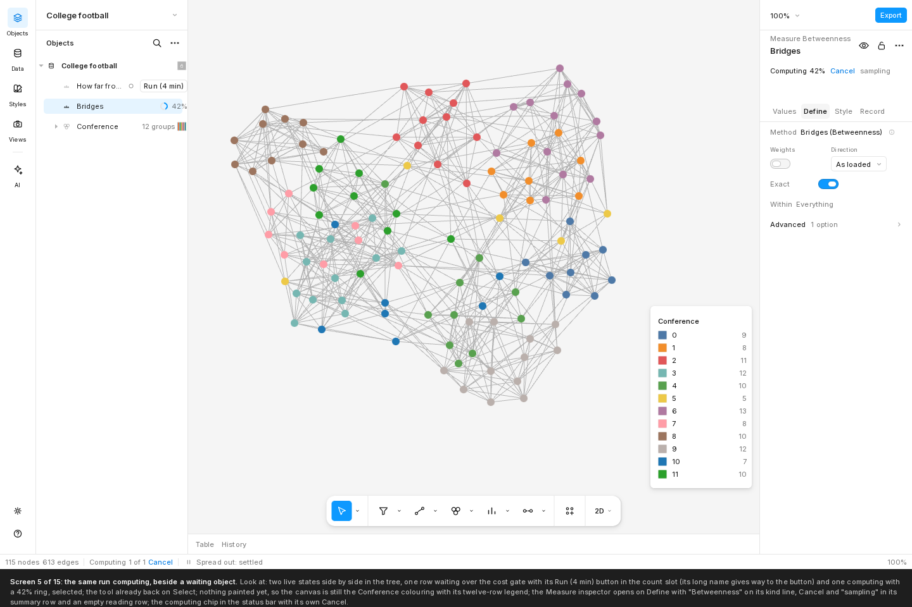
5. The same run computing, beside a waiting object
Look at: two live states side by side in the tree, one row waiting over the cost gate with its Run (4 min) button in the count slot (its long name gives way to the button) and one computing with a 42% ring, selected; the tool already back on Select; nothing painted yet, so the canvas is still the Conference colouring with its twelve-row legend; the Measure inspector opens on Define with "Betweenness" on its kind line, Cancel and "sampling" in its summary row and an empty reading row; the computing chip in the status bar with its own Cancel.
Open the HTMLPNG

6. A Measure selected, continuous encoding
Influence (PageRank) selected on its Style tab. Look at: every node on the viridis ramp and sized by the same value, 34 and 1 largest and yellowest, six labels; the Communities row's strip chip at 50 percent because Influence covers its Colour, and no Communities block in the legend; NODES with the Colour block open (scale, the palette select showing the ramp itself, values from and to as one captioned row, clamp and reverse with Reset, the Missing chit, the legend preview) and Size collapsed to its header; EDGES empty with its "+"; the tab strip promising Values, Define and Record.
Open the HTMLPNG
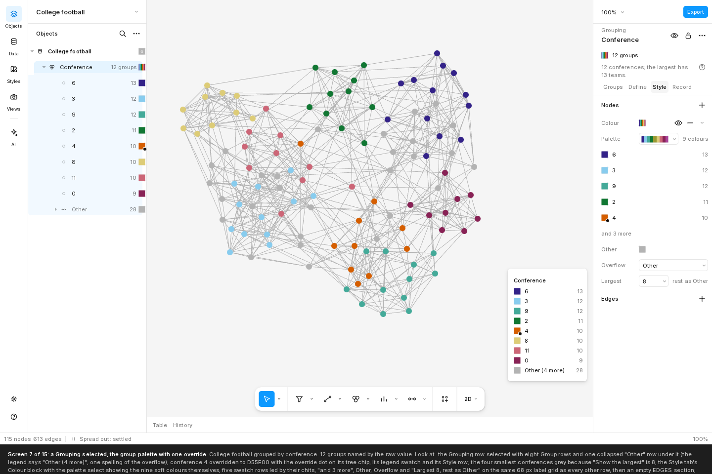
7. A Grouping selected, the group palette with one override
College football grouped by conference: 12 groups named by the raw value. Look at: the Grouping row selected with eight Group rows and one collapsed "Other" row under it (the legend says "Other (4 more)", one spelling of the overflow); conference 4 overridden to D55E00 with the override dot on its tree chip, its legend swatch and its Style row; the four smallest conferences grey because "Show the largest" is 8; the Style tab's Colour block with the palette select showing the nine soft colours themselves, five swatch rows led by their chits, "and 3 more", Other, Overflow and "Largest 8, rest as Other" on the same 68 px label grid as every other row, then an empty EDGES section; Select active.
Open the HTMLPNG
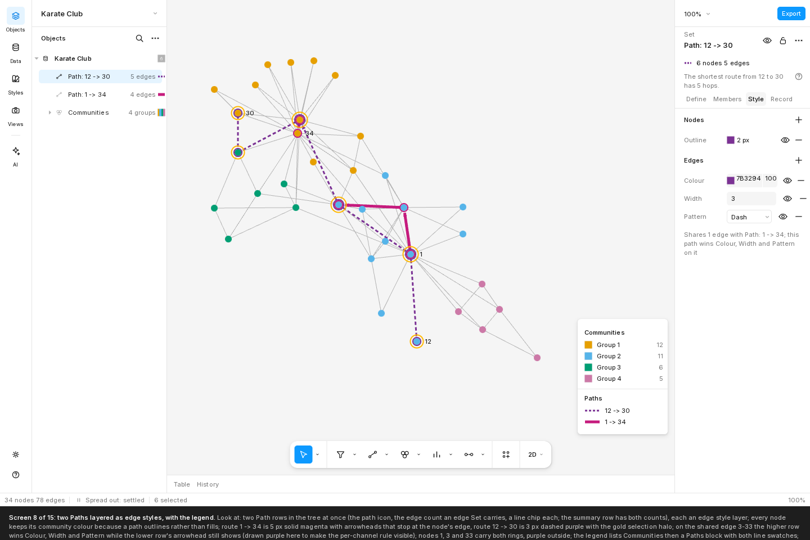
8. Two Paths layered as edge styles
Look at: two Path rows in the tree at once (the path icon, the edge count an edge Set carries, a line chip each; the summary row has both counts), each an edge style layer; every node keeps its community colour because a path outlines rather than fills; route 1 -> 34 is 5 px solid magenta with arrowheads that stop at the node's edge, route 12 -> 30 is 3 px dashed purple with the gold selection halo; on the shared edge 3-33 the higher row wins Colour, Width and Pattern while the lower row's arrowhead still shows (drawn purple here to make the per-channel rule visible); nodes 1, 3 and 33 carry both rings, purple outside; the legend lists Communities then a Paths block with both line swatches; the Style tab has NODES (Outline 2 px) and EDGES (Colour, Width, Pattern, each with eye and minus) and a wrapped note about the shared edge.
Open the HTMLPNG
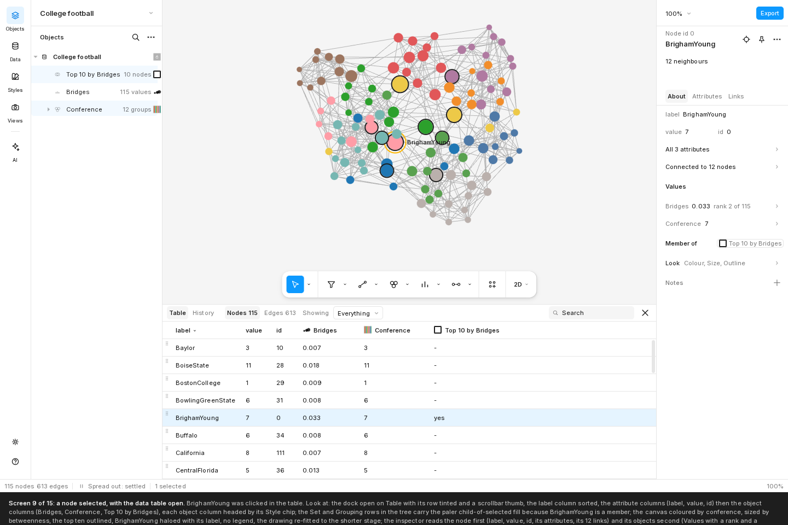
9. A node selected, with the data table open
BrighamYoung was clicked in the table. Look at: the dock open on Table with its row tinted and a scrollbar thumb, the label column sorted, the attribute columns (label, value, id) then the object columns (Bridges, Conference, Top 10 by Bridges), each object column headed by its Style chip; the Set and Grouping rows in the tree carry the paler child-of-selected fill because BrighamYoung is a member; the canvas coloured by conference, sized by betweenness, the top ten outlined, BrighamYoung haloed with its label, no legend, the drawing re-fitted to the shorter stage; the inspector reads the node first (label, value, id, its attributes, its 12 links) and its objects second (Values with a rank and a chevron, Member of, Look, Notes), with Attributes and Links as tabs rather than a scroll.
Open the HTMLPNG

10. The timeline: a time window, the transport bar and its gear
Email network, window 2019-03 to 2019-05, paused: the 412 in-window nodes and 1,910 edges drawn, coloured by the whole-year communities, sized by in-window connections, the 58 busiest outlined. Look at: the transport bar under the canvas (window text, step and play, speed, the month-ticked slider with the translucent brand band and its handles, the two change marks at Apr and Sep, the in-window counts, the pressed gear); its popover with the time settings that used to be a fifth tab (the two long switch labels on full-width rows, the caption under the first); the Data tab's attribute rows with sent carrying the filled time glyph; the status bar's window mask. The legend (with its "computed on" caveat) is hidden while the popover is open.
Open the HTMLPNG
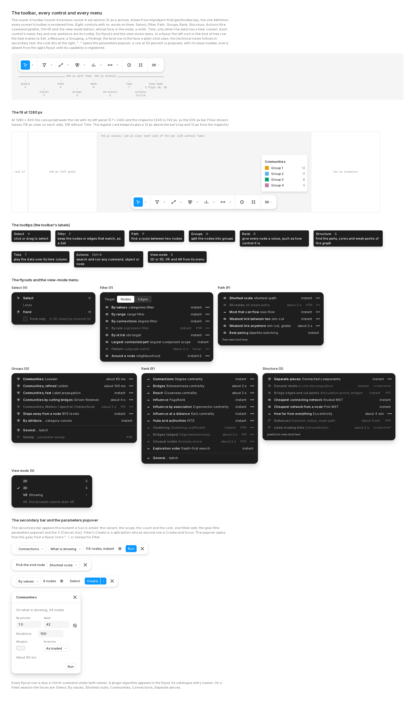
11. The toolbar, every control and every menu
The icon-only bar at 1:1 with a callout per control and its width (505 px with Time, 465 without); the fit at 1280 between the rail, the left panel and the inspector; every control's tooltip, which is its label; six flyouts and the view-mode menu open in columns (proposed rows at 50 percent with their issue numbers; Hand is Select's third row, Around a node is Filter's last); the trimmed Rank, Path and Filter strips; the Communities popover; the footnote.
Open the HTMLPNG

12. Screen 3 in the dark theme
The same state as screen 3 with data-theme="dark". Look at: panels #2c2c2c on a #1e1e1e canvas; the one accent (Export, the selected row's tint) at #0c8ce9; the Okabe-Ito colours, the #d55e00 override and the gold halo unchanged; the Degree > 8 outline, its ring chip and the six labels now white because they are the theme's ink; the default edge grey #5a5a5a; the legend card dark with white text; the tab strip, the labelled toolbar and every row exactly where screen 3 has them.
Open the HTMLPNG
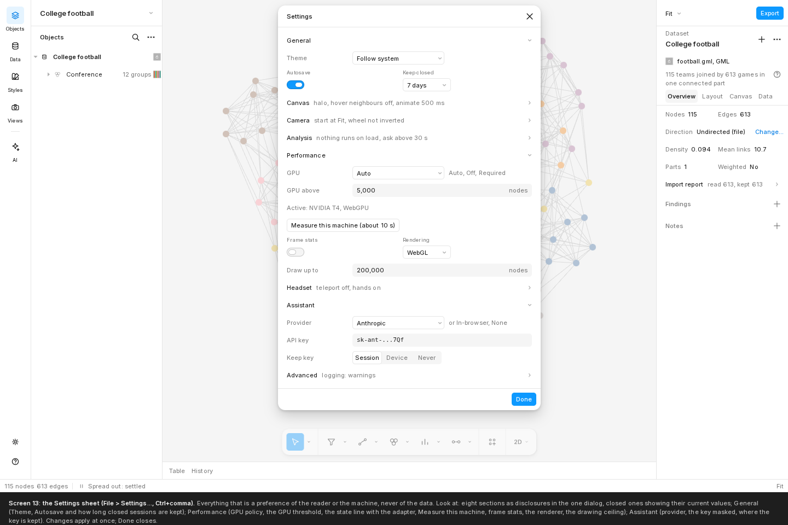
13. The Settings sheet
Everything that is a preference of the reader or the machine, never of the data. Look at: eight sections as disclosures in the one dialog, closed ones showing their current values; General (Theme, Autosave and how long closed sessions are kept); Performance (GPU policy, the GPU threshold, the state line with the adapter, Measure this machine, frame stats, the renderer, the drawing ceiling); Assistant (provider, the key masked, where the key is kept). Changes apply at once; Done closes.
Open the HTMLPNG
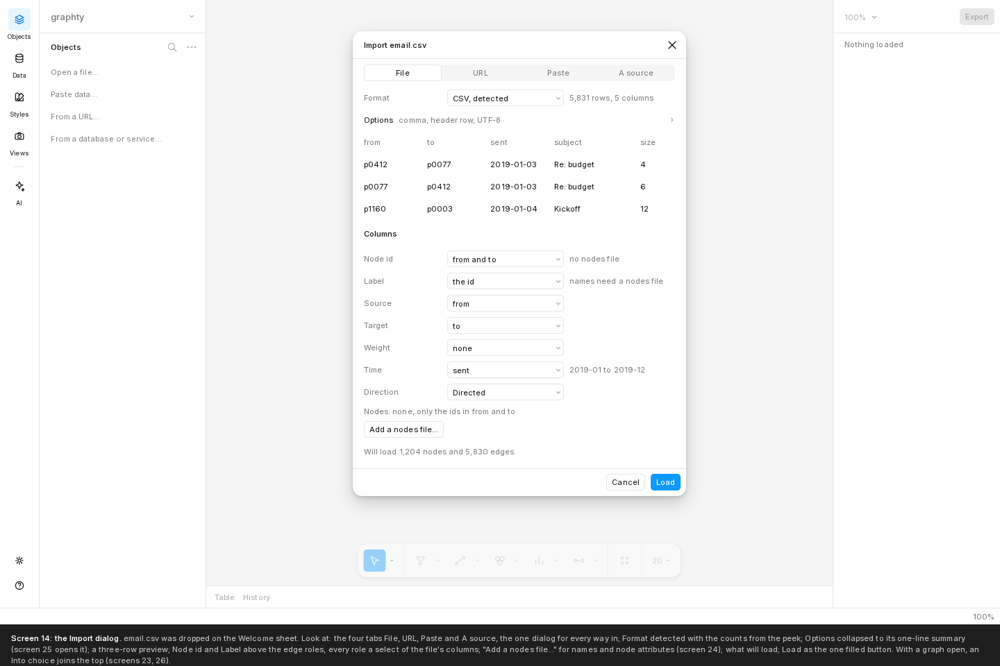
14. The Import dialog: where from, a preview, and column roles as selects
email.csv was dropped on the Welcome sheet. Look at: the four tabs File, URL, Paste and A source, the one dialog for every way in; Format detected with the counts from the peek; Options collapsed to its one-line summary (screen 25 opens it); a three-row preview; Node id and Label above the edge roles, every role a select of the file's columns; "Add a nodes file..." for names and node attributes (screen 24); what will load; Load as the one filled button. With a graph open, an Into choice joins the top (screens 23, 26).
Open the HTMLPNG
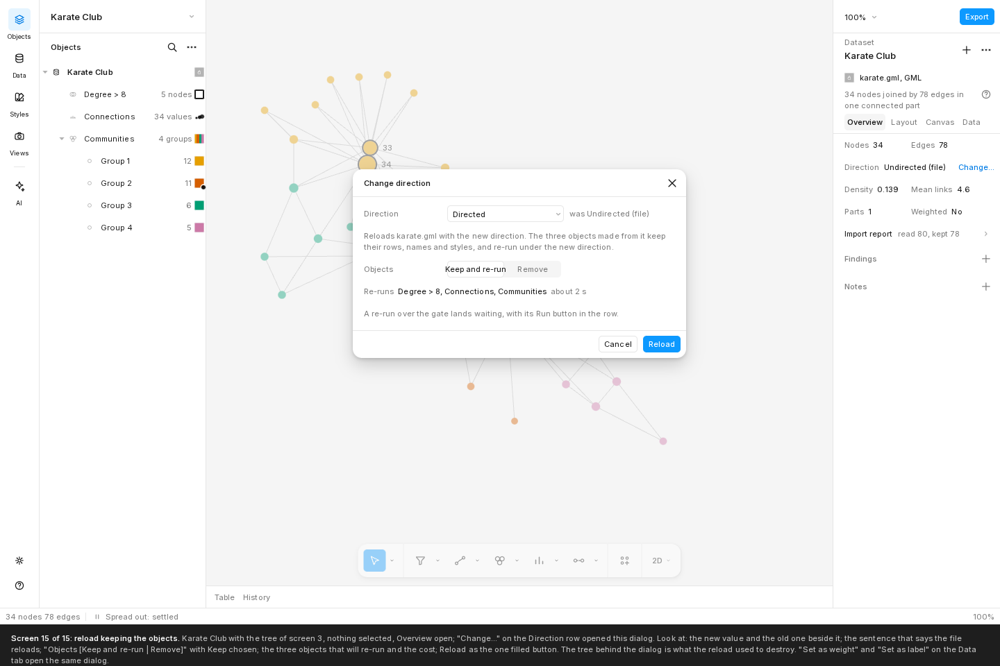
15. Reload keeping the objects: a column role changed after the first runs
Karate Club with the tree of screen 3, nothing selected, Overview open; "Change..." on the Direction row opened this dialog. Look at: the new value and the old one beside it; the sentence that says the file reloads; "Objects [Keep and re-run | Remove]" with Keep chosen; the three objects that will re-run and the cost; Reload as the one filled button. The tree behind the dialog is what the reload used to destroy. "Set as weight" and "Set as label" on the Data tab open the same dialog.
Open the HTMLPNG
Files, projects and sessions
The file menu, unsaved work, saving and reopening a project, autosave, recipes, two graphs at once.
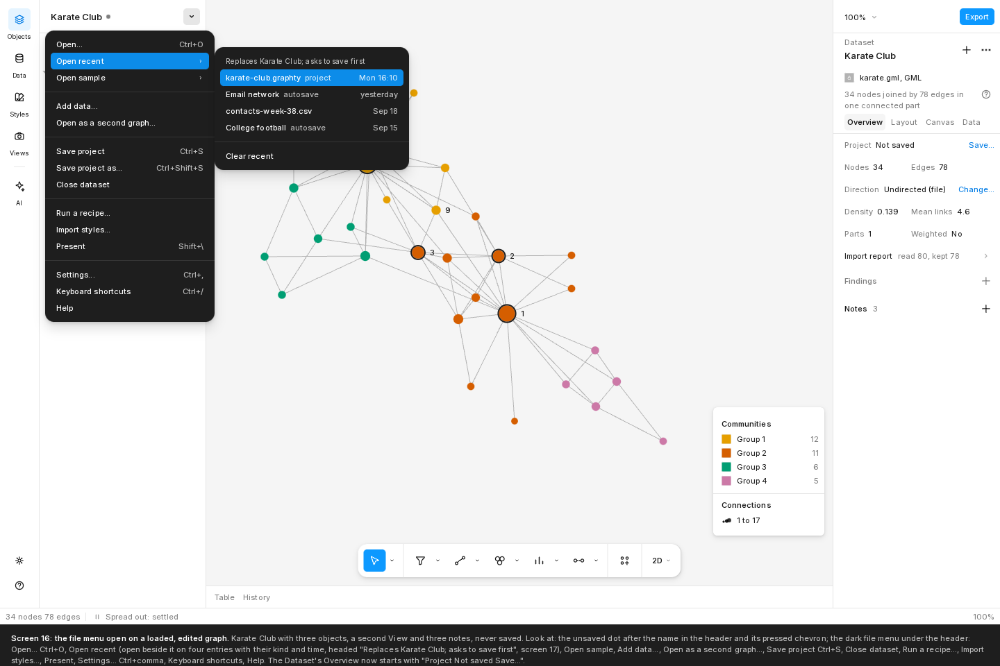
16. The file menu open on a loaded, edited graph
Karate Club with three objects, a second View and three notes, never saved. Look at: the unsaved dot after the name in the header and its pressed chevron; the dark file menu under the header: Open... Ctrl+O, Open recent (open beside it on four entries with their kind and time, headed "Replaces Karate Club; asks to save first", screen 17), Open sample, Add data..., Open as a second graph..., Save project Ctrl+S, Close dataset, Run a recipe..., Import styles..., Present, Settings... Ctrl+comma, Keyboard shortcuts, Help. The Dataset's Overview now starts with "Project Not saved Save...".
Open the HTMLPNG
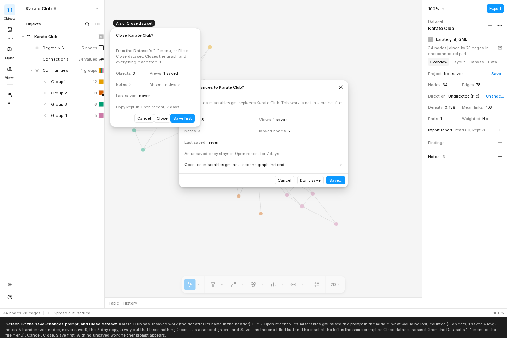
17. Save changes before opening another dataset; Close dataset
Karate Club has unsaved work (the dot after its name in the header). File > Open recent > les-miserables.gml raised the prompt in the middle: what would be lost, counted (3 objects, 1 saved View, 3 notes, 5 hand-moved nodes, never saved), the 7-day copy, a way out that loses nothing (open it as a second graph), and Save... as the one filled button. The inset at the left is the same prompt as Close dataset raises it (from the Dataset's "..." menu or the file menu): Cancel, Close, Save first. With no unsaved work neither prompt appears.
Open the HTMLPNG
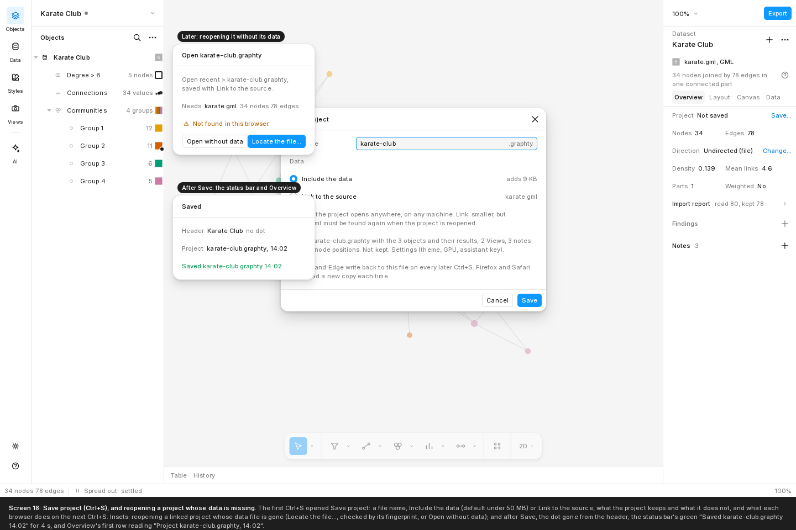
18. Save the project; reopen one whose data is missing
The first Ctrl+S opened Save project: a file name, Include the data (default under 50 MB) or Link to the source, what the project keeps and what it does not, and what each browser does on the next Ctrl+S. Insets: reopening a linked project whose data file is gone (Locate the file..., checked by its fingerprint, or Open without data); and after Save, the dot gone from the header, the status bar's green "Saved karate-club.graphty 14:02" for 4 s, and Overview's first row reading "Project karate-club.graphty, 14:02".
Open the HTMLPNG

19. Session restored after a reload
The tab closed at 14:32 with Bridges computing. On reopening, graphty restored the session without asking: the status bar's notice says so with its two ways out, Start empty and Undo restore; Bridges, in flight at the crash, is waiting with its Run button; Top 5 Bridges, made from it, is stale; "2 stale [Re-run all]" re-runs both. Inset: screen 1's Recent list after autosave: the restored session with its time and its "..." menu (open beside it), a saved project, and an older session whose 48 MB data file was not kept, with Locate file....
Open the HTMLPNG

20. Run a recipe on a new file
Next week's club-week-39.gml is open; File > Run a recipe... chose last week's karate-analysis. Before anything runs, every step is checked against the new data: three fit, step 4 names a column this file lacks and offers a mapping (weight is [strength]), step 5 names a node that is missing and will be skipped. Add to or replace what is in the tree, the total cost, Run. Inset: the Export recipe dialog that wrote the file: which objects, Steps or Styles only, Include layout.
Open the HTMLPNG
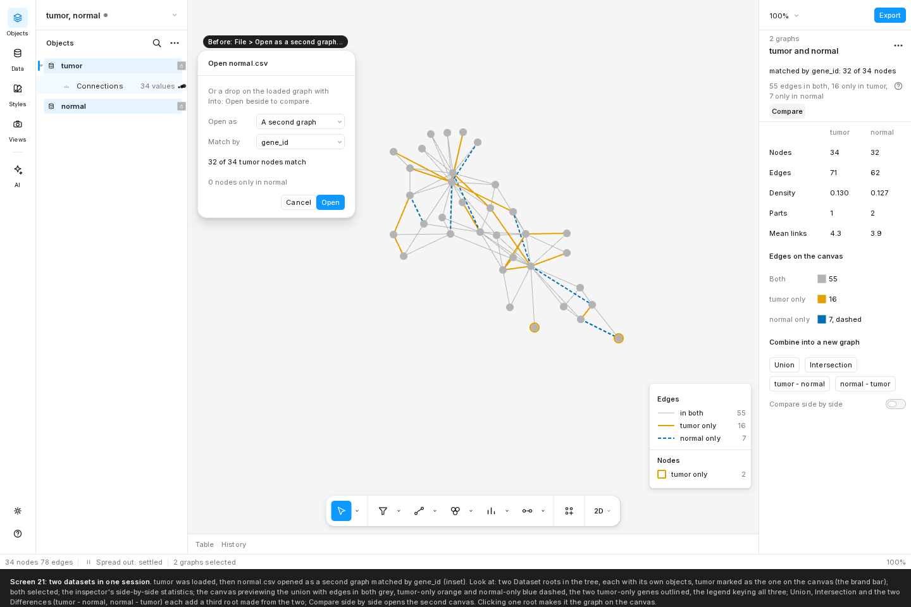
21. Two datasets in one session
tumor was loaded, then normal.csv opened as a second graph matched by gene_id (inset). Look at: two Dataset roots in the tree, each with its own objects, tumor marked as the one on the canvas (the brand bar); both selected; the inspector's side-by-side statistics; the canvas previewing the union with edges in both grey, tumor-only orange and normal-only blue dashed, the two tumor-only genes outlined, the legend keying all three; Union, Intersection and the two Differences (tumor - normal, normal - tumor) each add a third root made from the two; Compare side by side opens the second canvas. Clicking one root makes it the graph on the canvas.
Open the HTMLPNG
Getting data in
Every way in opens one Import dialog: a URL, pasted text, nodes and edges files, options, a drop, failures, progress, large files, a database.
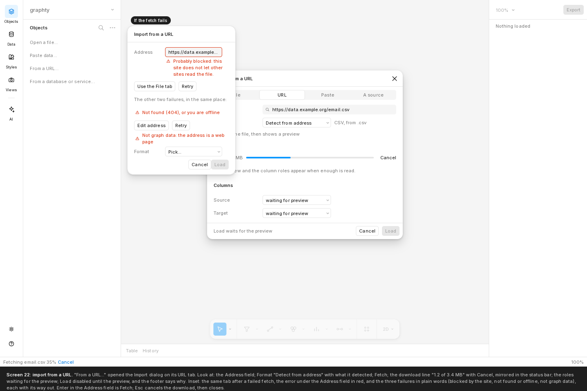
22. Import from a URL: fetching, and the three ways a fetch fails
"From a URL..." opened the Import dialog on its URL tab. Look at: the Address field; Format "Detect from address" with what it detected; Fetch; the download line "1.2 of 3.4 MB" with Cancel, mirrored in the status bar; the roles waiting for the preview; Load disabled until the preview, and the footer says why. Inset: the same tab after a failed fetch, the error under the Address field in red, and the three failures in plain words (blocked by the site, not found or offline, not graph data), each with its way out. Enter in the Address field is Fetch; Esc cancels the download, then closes.
Open the HTMLPNG

23. Paste data: Ctrl+V on the canvas opens the Paste tab, pre-filled
Ctrl+V on the Karate Club canvas, an edge list on the clipboard. Look at: the dialog opens on Paste, pre-filled, and loads nothing by itself; the Into choice as radios (Replace, Add, Add attributes, Open beside) because a graph is open, Add chosen; the pasted text in a monospace field; the accepted forms; the detected format and counts; the same column roles as a file; the sentence naming the ids that already exist; the button says what it will do. Inset: a line that does not parse, underlined in red with the reason under the field and Skip; the button stays disabled.
Open the HTMLPNG

24. Import an edges file and a nodes file together
"Add a nodes file..." on screen 14 added people.csv (dropping both files at once lands here too). Look at: two stacked sections, each with its file name, row count, a remove button, a preview and its roles; Node id, Label and Type on the nodes file; the match line; a choice for each kind of mismatch (keep or drop the 14 people with no edges; create or drop the 3 endpoints missing from people.csv, which would drop their 9 edges); the sentence with the totals.
Open the HTMLPNG

25. Import options open, a wrong separator fixed, 12 unreadable rows
First inset: the first peek of a semicolon file read every row as one column, and the dialog said so in amber, with Load disabled. Look at: Options open with the format's own rows (Separator, Quote, Header row, Skip lines, Encoding, Missing values), each change re-running the peek; the preview now in four columns; the 12 rows that still do not read, each with its line number, its raw text and the reason; Load that says it will skip them. The second inset is the rows a JSON file gets in the same place (variant and the paths into the file).
Open the HTMLPNG
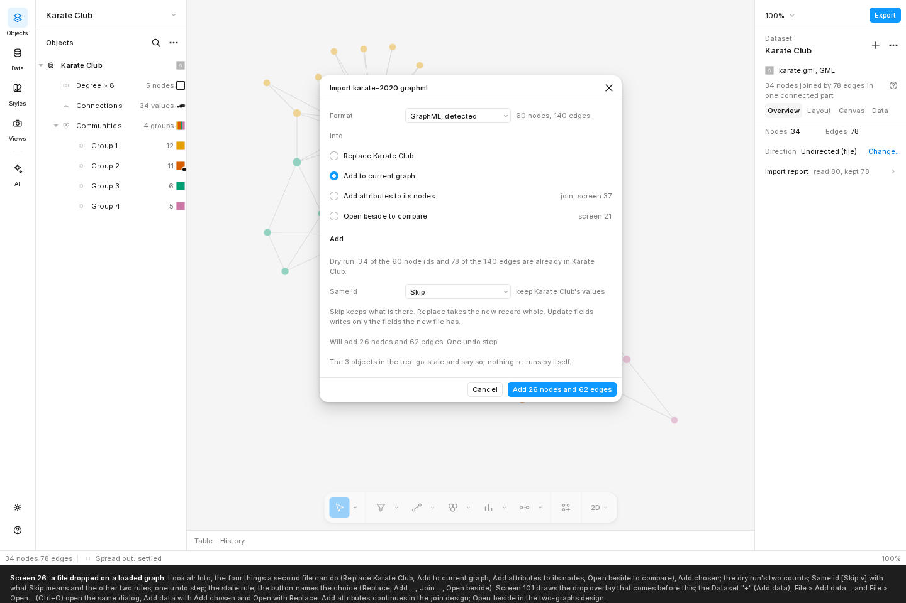
26. A file dropped on a loaded graph: replace, add, join or open beside
Look at: Into, the four things a second file can do (Replace Karate Club, Add to current graph, Add attributes to its nodes, Open beside to compare), Add chosen; the dry run's two counts; Same id [Skip v] with what Skip means and the other two rules; one undo step; the stale rule; the button names the choice (Replace, Add ..., Join ..., Open beside). Screen 101 draws the drop overlay that comes before this; the Dataset "+" (Add data), File > Add data... and File > Open... (Ctrl+O) open the same dialog, Add data with Add chosen and Open with Replace. Add attributes continues in the join design; Open beside in the two-graphs design.
Open the HTMLPNG

101. A file dragged over a loaded graph
karate-2020.graphml is being dragged over the Karate Club canvas. Look at: the whole stage outlined in dashed brand blue with one line that says the drop will not replace anything by itself; the graph, the tree and the inspector unchanged underneath. Letting go opens the Import dialog with its Into choice (screen 26); Esc or dragging away cancels. The same outline appears over the Welcome sheet before anything is loaded, where a drop opens the dialog of screen 14.
Open the HTMLPNG

27. A load that fails: said where it started, nothing half-built
email.xlsx dropped on the Welcome sheet. Look at: the error in the Welcome sheet where the drop zone was, in plain words, with what the app does read and what to do; Pick the format... and Choose another file (a read or network error offers Try again instead); the error code with Copy; nothing half-built (the samples and Recent below are unchanged; with a graph open, the graph is). Inset: the other failure, inside the Import dialog, when no column can be the target: the error under the Target field, Load disabled. Status bar: the red "Load failed: <reason> [Details]" stays until the next load.
Open the HTMLPNG

28. Loading a large file, with Cancel everywhere it shows
Look at: the loading card centred on the empty stage (percentage, bytes read, rows so far, Cancel); the pending name in secondary text in the file header (Export and the framing pill wait), in the tree with its progress ring, and in the inspector, whose tabs are greyed; every tool at 30 percent; the status chip "Loading big.csv 42% [Cancel]" (rows read when the size is unknown). Cancel or Esc restores exactly the state before Load (here the Welcome sheet; with a graph open, that graph and its tree) and the chip says "Load cancelled".
Open the HTMLPNG

29. A file above the render ceiling: choose a subset before loading
The peek counted 350,000 nodes; this machine draws 200,000 (Settings > Performance > Render ceiling). Look at: both numbers and the memory estimate; one choice of what to load (the busiest N, the largest connected part, an id's neighbourhood within N hops, a time window, everything), each with its estimate; the busiest chosen by default; Load subset as the one filled button.
Open the HTMLPNG
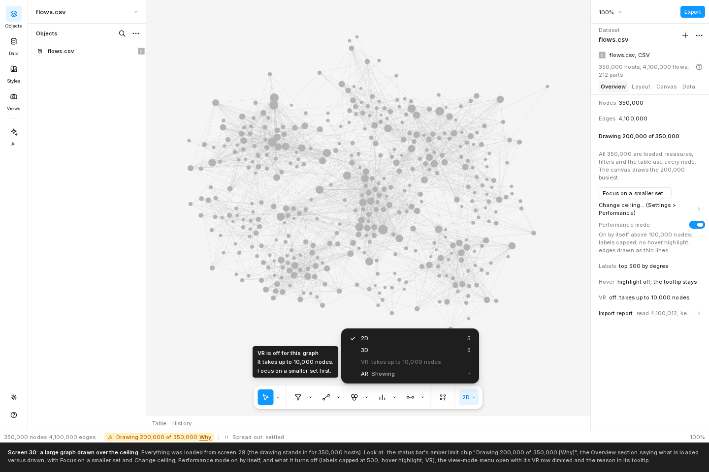
30. Large graph: drawing 200,000 of 350,000, and what that turns off
Everything was loaded from screen 29 (the drawing stands in for 350,000 hosts). Look at: the status bar's amber limit chip "Drawing 200,000 of 350,000 [Why]"; the Overview section saying what is loaded versus drawn, with Focus on a smaller set and Change ceiling; Performance mode on by itself, and what it turns off (labels capped at 500, hover highlight, VR); the view-mode menu open with its VR row dimmed and the reason in its tooltip.
Open the HTMLPNG
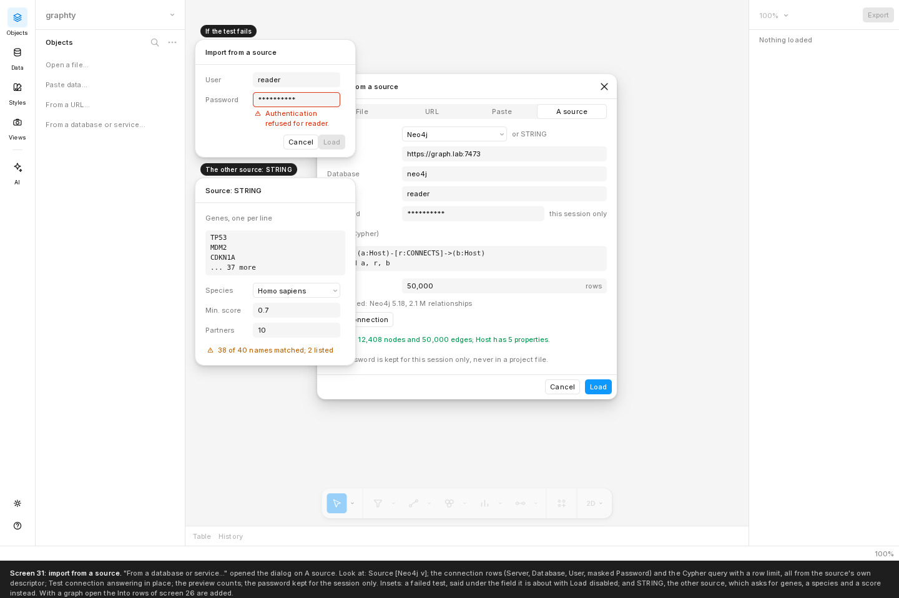
31. Import from a source: a Neo4j server and a query
"From a database or service..." opened the dialog on A source. Look at: Source [Neo4j v]; the connection rows (Server, Database, User, masked Password) and the Cypher query with a row limit, all from the source's own descriptor; Test connection answering in place; the preview counts; the password kept for the session only. Insets: a failed test, said under the field it is about with Load disabled; and STRING, the other source, which asks for genes, a species and a score instead. With a graph open the Into rows of screen 26 are added.
Open the HTMLPNG

32. Reloading from a URL failed: the last good copy stays
Karate Club came from example.org at 10:42; Reload (the Source row, the Dataset "..." menu, Ctrl+Shift+R) failed at 10:57. Look at: the Source row with Reload; the failure under it in red, saying which copy is shown; Retry and Change source...; Details with the HTTP status and time; the status bar's red chip "Reload failed [Details]"; the tree unchanged and nothing stale, because nothing under it changed.
Open the HTMLPNG
Editing and joining data
The import report, load rules, column operations, joins, formulas, editing a value, removing, merging, adding.

33. Import report opened, and the rejected rows
Karate Club just loaded; the reader opened the Overview tab's Import report and pressed See in table. Look at: the report's rows (read 80 edge records, kept 78, rejected 2 with See in table, repeats 0, weights none, the endpoint columns and that they were detected); one line per rejected record with its reason; Add fixed rows (adds the rows once their cells are corrected, no reload) and Import options... (screen 34); the Table dock opened on a third tab, Rejected 2, one row per rejected record with its file line, the raw source and target (the bad cell in red), the reason and the fix, and a footer with Add fixed rows; this tab has no Showing or Search, because it holds only the rejected records; the selected row's known endpoint, node 7, haloed on the canvas.
Open the HTMLPNG
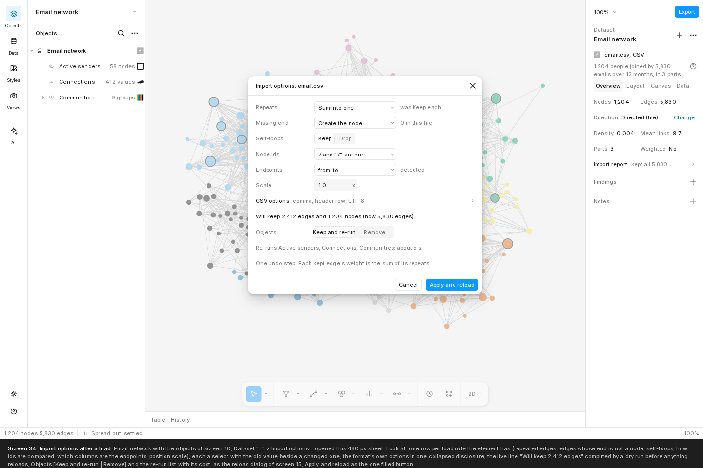
34. Import options after a load
Email network with the objects of screen 10; Dataset "..." > Import options... opened this 480 px sheet. Look at: one row per load rule the element has (repeated edges, edges whose end is not a node, self-loops, how ids are compared, which columns are the endpoints, position scale), each a select with the old value beside a changed one; the format's own options in one collapsed disclosure; the live line "Will keep 2,412 edges" computed by a dry run before anything reloads; Objects [Keep and re-run | Remove] and the re-run list with its cost, as the reload dialog of screen 15; Apply and reload as the one filled button.
Open the HTMLPNG

35. A column's menu drawn open
Email network, nothing selected, Dataset > Data; the reader pressed "..." on the node column messages. Look at: the Data tab now separating node columns from edge columns; the menu in four groups: Show (Colour by, Size by, Label by; each makes a Measure or a Grouping row in the tree, as the Rank tool does), Pick out (Filter by range..., Group by ranges...), Role (the load-time roles; a role that reloads the file says so), Edit (the column operations of screen 36); items that cannot apply stay in place, disabled, with the reason in the row. The same menu opens from the table's column header and from a right-click on the row. Size by lands as screen 6 does: a new Measure row, selected, sizing every node.
Open the HTMLPNG

36. Change a column's type
Email network, Dataset > Data; the node column joined was read as text because the file mixes two date spellings, and the reader chose Change type... from its menu (screen 35, Edit group). Look at: the type as the popover's first row (a select, so no submenu), the format the element detected, a five-row before-and-after preview in which unreadable values show as (empty), the count read, the count that would become empty and the one-button repair for the second spelling, what reads the column now, and Change type as the one filled button. The table's column header opens the same menu and the same popover.
Open the HTMLPNG
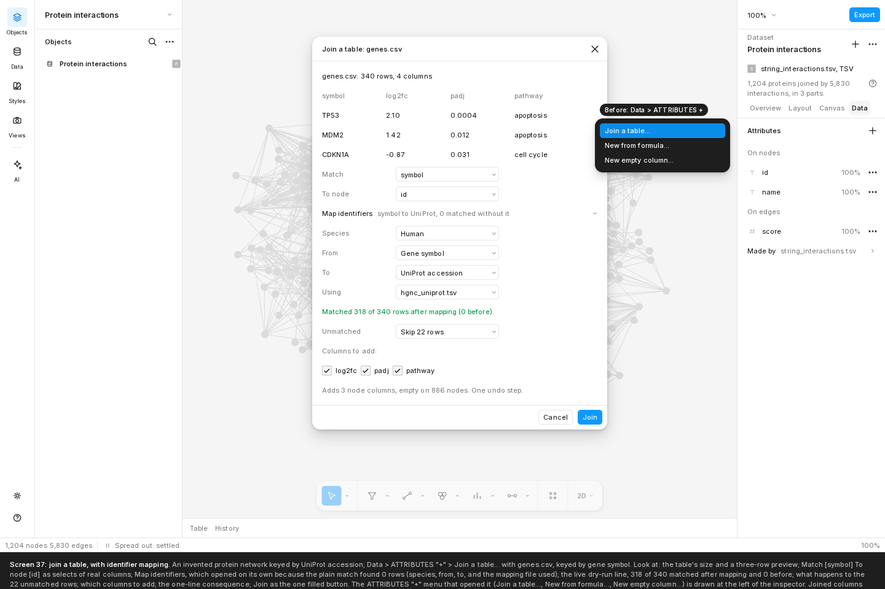
37. Join a table, with identifier mapping
An invented protein network keyed by UniProt accession; Data > ATTRIBUTES "+" > Join a table... with genes.csv, keyed by gene symbol. Look at: the table's size and a three-row preview; Match [symbol] To node [id] as selects of real columns; Map identifiers, which opened on its own because the plain match found 0 rows (species, from, to, and the mapping file used); the live dry-run line, 318 of 340 matched after mapping and 0 before; what happens to the 22 unmatched rows; which columns to add; the one-line consequence; Join as the one filled button. The ATTRIBUTES "+" menu that opened it (Join a table..., New from formula..., New empty column...) is drawn at the left of the inspector. Joined columns appear in ATTRIBUTES with the other node columns, and the join is one undo step.
Open the HTMLPNG

38. New column from a formula
Karate Club with three results; Data > ATTRIBUTES "+" > New from formula.... Look at: the name, Nodes or Edges, the formula in a code field, names in brackets, the results and columns as chips that insert their name, the function list, a five-row live preview (the top five by the new score; node 34 scores 1.69), the missing-input rule and that the column follows its inputs (re-computed when either result re-runs); Create as the one filled button. Inset: the same field while typing a name that does not exist, underlined in red with the reason and the completion list; Create disabled. The new row lands in ATTRIBUTES with a formula glyph; its "..." has Size by, Colour by and the rest, so a hub-score Measure is one more click.
Open the HTMLPNG
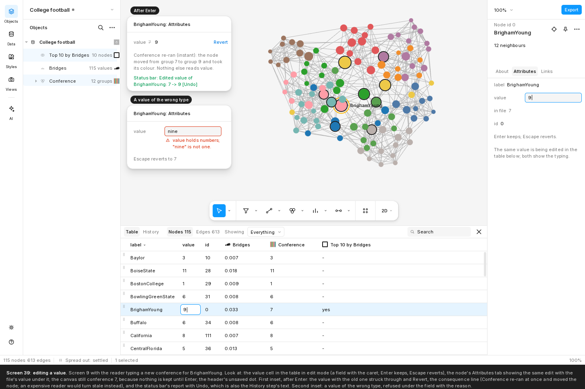
39. Editing a value
Screen 9 with the reader typing a new conference for BrighamYoung. Look at: the value cell in the table in edit mode (a field with the caret; Enter keeps, Escape reverts), the node's Attributes tab showing the same edit with the file's value under it; the canvas still conference 7, because nothing is kept until Enter; the header's unsaved dot. First inset, after Enter: the value with the old one struck through and Revert, the consequence line (Conference re-ran at once and moved the node; an expensive reader would turn stale instead), and the status bar's report with Undo, which is also the History step's text. Second inset: a value of the wrong type, refused under the field with the reason.
Open the HTMLPNG

40. Remove nodes from the data
Karate Club with three results; the reader selected nodes 6, 7, 17 and pressed Delete (the several-elements inspector behind the dialog lists the same verb as "Remove from data... Delete", beside "Merge into one node...", screen 41). Look at: the nodes and the 7 edges that go with them, those edges drawn dashed on the canvas; which Groups lose members; which objects re-run at once and which turn stale; one undo step, the file untouched; Hide instead, the verb the reader may have meant; Remove as the one filled button, red because it removes data. On a tree row, Delete removes the object, not data; on the canvas and in the table it removes data, and always asks.
Open the HTMLPNG

41. Merge two nodes into one
Email network; two nodes near the left edge are one person under two addresses (labelled Alice Smith and A. Smith, haloed). The reader selected both and chose Merge into one node... (the several-elements inspector). Look at: which id survives, as a two-way choice; each attribute that differs as a select of the two values, and the attributes that agree; what happens to the edges (10 re-attach, 0 duplicate an existing edge and follow the repeat rule); the switch that applies the same merge to every pair sharing the email attribute, with its dry-run count; what re-runs; Merge as the one filled button.
Open the HTMLPNG
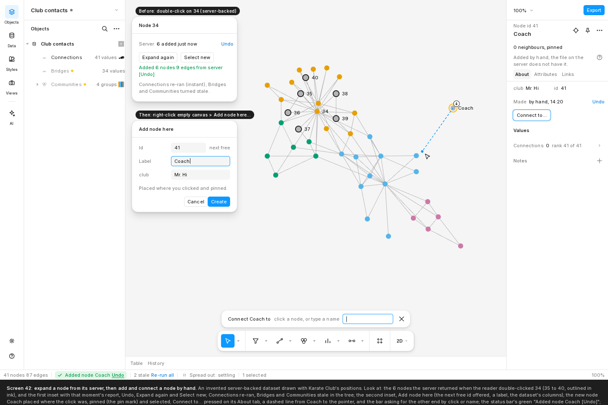
42. Expand a node from its server, then add and connect a node by hand
An invented server-backed dataset drawn with Karate Club's positions. Look at: the 6 nodes the server returned when the reader double-clicked 34 (35 to 40, outlined in ink), and the first inset with that moment's report, Undo, Expand again and Select new; Connections re-ran, Bridges and Communities stale in the tree; the second inset, Add node here (the next free id offered, a label, the dataset's columns); the new node Coach placed where the click was, pinned (the pin mark) and selected; Connect to... pressed on its About tab, a dashed line from Coach to the pointer, and the bar asking for the other end by click or name; the status bar's green "Added node Coach [Undo]"; the unsaved dot in the header.
Open the HTMLPNG
Undo, history, errors and recovery
The History dock, the object menu, rename and reorder, failed runs, stale objects, a lost view, empty results.
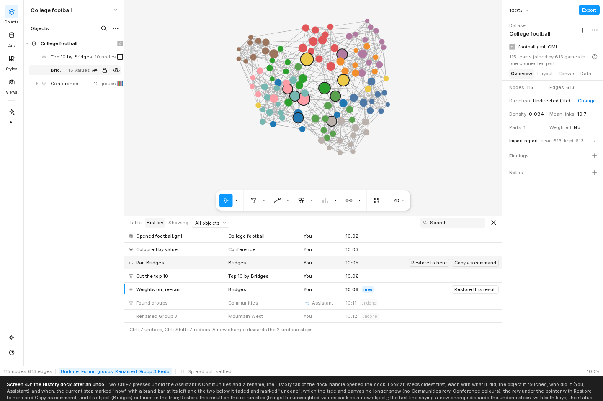
43. History dock after an undo
Two Ctrl+Z presses undid the Assistant's Communities and a rename; the History tab of the dock handle opened the dock. Look at: steps oldest first, each with what it did, the object it touched, who did it (You, Assistant) and when; the current step marked "now" with a brand bar at its left and the two below it faded and marked "undone", which the tree and canvas no longer show (no Communities row, Conference colours); the row under the pointer with Restore to here and Copy as command, and its object (Bridges) outlined in the tree; Restore this result on the re-run step (brings the unweighted values back as a new object); the last line saying a new change discards the undone steps, with both keys; the status bar's notice naming what was undone, with Redo.
Open the HTMLPNG

44. Object menu and the delete that confirms
Right-click on the Degree > 10 row (or its inspector "...") opened the menu beside the row: Rename (F2, or double-click the name), Duplicate, Re-run, Focus on this, Select members, Show in table, Export..., Move up or down, Delete... last. Delete asks only because two objects live inside this Set; a leaf deletes at once with an Undo link in the status bar. Look at: the dark menu beside the row, Delete... last and red; the 320 px confirmation naming both children and the linked object that will be frozen rather than deleted, the red button that says the count, and Ctrl+Z as the net. A Group's menu has no Delete (hide it instead); the Dataset's has Close dataset. Rename in place and the drag insertion line are screen 102.
Open the HTMLPNG

102. Rename in place and drag to reorder
Two moments on one tree. F2 (or a double-click on the name, or Rename in the row's menu, screen 44) turned Path: 12 -> 30's name into a field with the text selected; Enter keeps, Esc restores, one undo step. Degree > 10 is being dragged: the row is ghosted and the brand insertion line above Hubs in Group 1 is where it will land; the status bar says so. Order is paint order (the top row paints last and wins), so a drag can change the picture; Ctrl+] and Ctrl+[ move the selected row without the mouse. A row cannot be dragged out of its Dataset, and Groups keep their Grouping's order.
Open the HTMLPNG

45. A failed run
Screen 5 a moment later: the GPU was lost during sampling. Look at: the red dot on the Bridges row and no count; the summary row in red saying what failed and at what point; the reading row saying nothing was painted (the Conference colours stand); Retry, focused, and Retry on the CPU as a separate button carrying its cost, which is the visible form of the no-silent-fallback rule; the error code and Copy details; the Define settings still editable below, so a changed setting plus Retry is the other way out; the red "Bridges failed [Show]" replacing the computing chip that disappeared. The inset is the same state for a refused style, with Reset style. (Costs are the section 4 example's 50,000-node figures, as on screen 5.)
Open the HTMLPNG
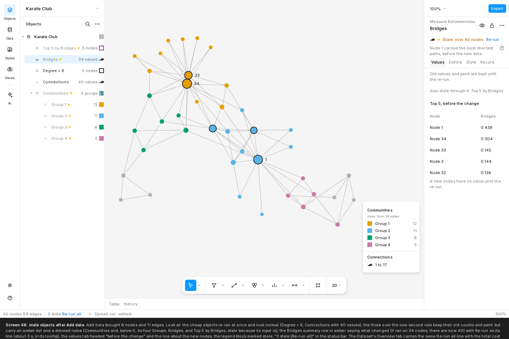
46. Stale objects after Add data
Add data brought 6 nodes and 11 edges. Look at: the cheap objects re-ran at once and look normal (Degree > 8, Connections with 40 values); the three over the one-second rule keep their old counts and paint but carry an amber dot and a dimmed name (Communities and, below it, its four Groups; Bridges; and Top 5 by Bridges, stale because its input is); the Bridges summary row in amber saying what changed (it ran on 34 nodes; there are now 40) with Re-run as its link (about 3 s, in its tooltip); the values tab headed "before the change" and the line about the new nodes; the legend block marked stale; "3 stale [Re-run all]" in the status bar. The Dataset's Overview tab carries the same Re-run all line with the total cost (not drawn). The six new nodes, at the edges of the drawing, are grey: no stale object has painted them. (Costs are illustrative, as on screen 5.)
Open the HTMLPNG

47. Graphics context lost
Screen 3 after the browser reclaimed the page's graphics context. Look at: the blank canvas under a grey, with one card that says what happened, that nothing was lost, and what still works; Reload view (rebuilds the picture from the session: same tree, layout positions and camera) and Copy diagnostics; the open Details with the code, time, renderer and versions; the toolbar under the grey, because its tools need the picture; the tree, Group 2's inspector and "11 selected" untouched; "View lost [Reload view]" in the status bar's error slot. The inset is a non-fatal element error (a background image that failed): only the red status chip "Error: background image failed [Details]" and this Details popover, with the canvas left working.
Open the HTMLPNG
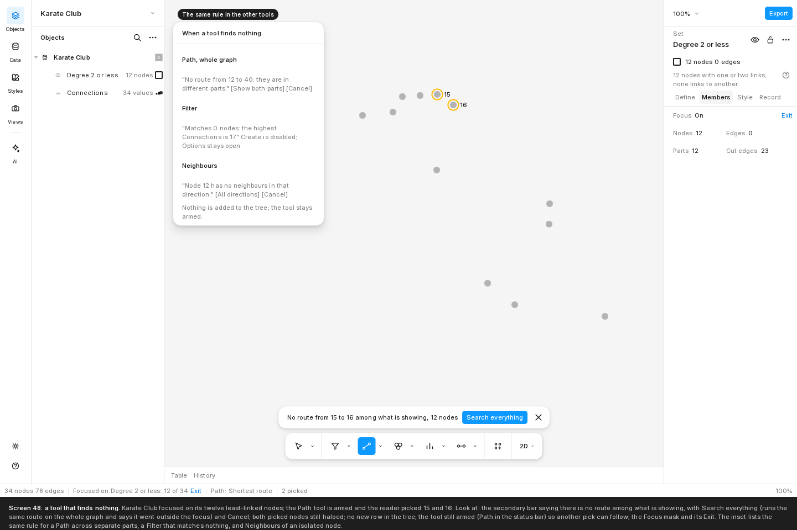
48. Empty results
Karate Club focused on its twelve least-linked nodes; the Path tool is armed and the reader picked 15 and 16. Look at: the secondary bar saying there is no route among what is showing, with Search everything (runs the same route on the whole graph and says it went outside the focus) and Cancel; both picked nodes still haloed; no new row in the tree; the tool still armed (Path in the status bar) so another pick can follow; the Focus mask and its Exit. The inset lists the same rule for a Path across separate parts, a Filter that matches nothing, and Neighbours of an isolated node.
Open the HTMLPNG
Navigating, finding and selecting
Right-click menus, Find, 3D and framing, the minimap, saved views, follow, box selection, edges, Focus, the keyboard.
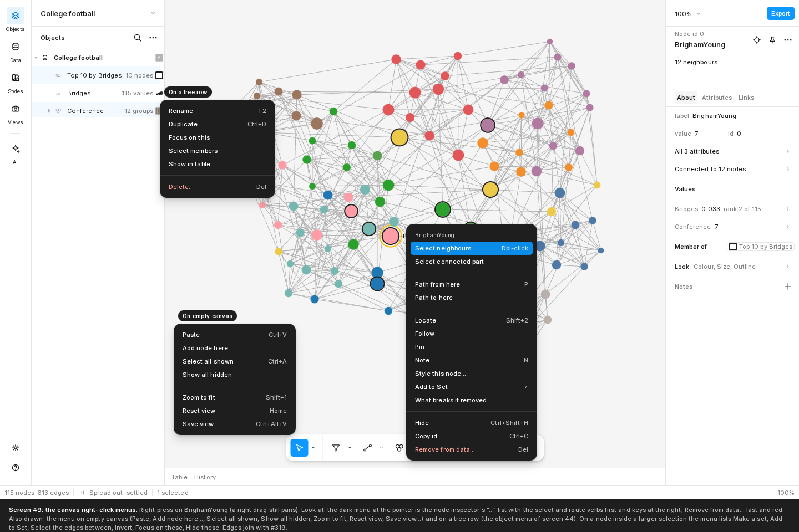
49. Canvas right-click menus
Right press on BrighamYoung (a right drag still pans). Look at: the dark menu at the pointer is the node inspector's "..." list with the select and route verbs first and keys at the right; Remove from data... last and red. Also drawn: the menu on empty canvas (Paste, Add node here..., Select all shown, Show all hidden, Zoom to fit, Reset view, Save view...) and on a tree row (the object menu of screen 44). On a node inside a larger selection the menu lists Make a set, Add to Set, Select the edges between, Invert, Focus on these, Hide these. Edges join with #319.
Open the HTMLPNG

50. Find open with results
Look at: the Objects header turned into the find field, with the count; the tree replaced in place by three sections: Objects (none), Nodes by label or id (four rows with the conference colour, then "20 more"), and Values in attributes with its scope select; the highlighted Values row lights its 24 matches and fades the rest; the dark bar offers Select, Make a set, Show in table; the table shows the same 24 rows, its search field carrying the same text. Arrow keys walk all sections; Enter on a node selects it and zooms to it; Esc restores the tree.
Open the HTMLPNG

51. 3D canvas with the framing menu open
Look at: the mode switch on 3D and Group 2 still selected across the switch; the camera tilted, so nearer rows are lower and larger; the pill and the status bar reading "Isometric" (a named framing; "Custom" after an orbit); the dark framing menu under the pill with zoom, fit, selection, the four 3D framings (the current one ticked), Reset view and Save view, keys at the right; Hand armed, so a drag orbits (the cursor), right-drag pans, the wheel zooms toward the pointer. With Select, a drag orbits and Shift+drag draws the selection box.
Open the HTMLPNG
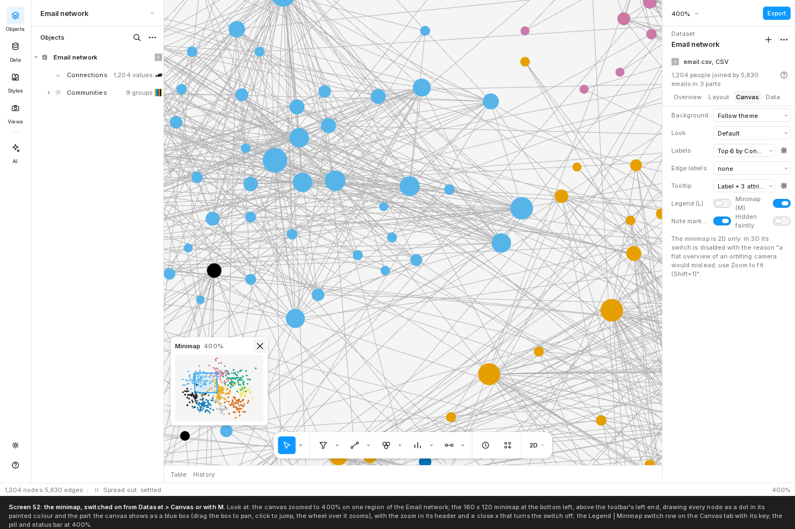
52. Minimap
Look at: the canvas zoomed to 400% on one region of the Email network; the 160 x 120 minimap at the bottom left, above the toolbar's left end, drawing every node as a dot in its painted colour and the part the canvas shows as a blue box (drag the box to pan, click to jump, the wheel over it zooms), with the zoom in its header and a close x that turns the switch off; the Legend | Minimap switch row on the Canvas tab with its key; the pill and status bar at 400%.
Open the HTMLPNG

53. Saved views and the View inspector
Look at: three rows in Views, "Hub close-up" current with the grey fill and a dot because the camera moved after it was applied (the canvas shows the orbited 3D camera closer on node 34); the pill and status bar reading "Custom"; the View inspector with Update to current, the Mode segments, Showing, Export image from this view and what a view keeps; the dark Views "..." menu under its button with Save view, previous and next, Present from here, Export views... and Import views.... Click a row applies it with a 500 ms move; double-click renames; drag reorders.
Open the HTMLPNG

54. Following a node
Look at: the node's dark "..." menu open under the header with Follow ticked; the camera centred on BrighamYoung at 160%, re-centred every frame while the layout moves it; the pill reading "Following BrighamYoung" with an x to stop, mirrored in the status bar; the layout chip settling, which is when following matters. Orbit and zoom still work around the node; the x, Esc, a pan or picking a view stops it; if the node stops showing (a filter, a Focus, a time window), following stops and the status bar says why.
Open the HTMLPNG
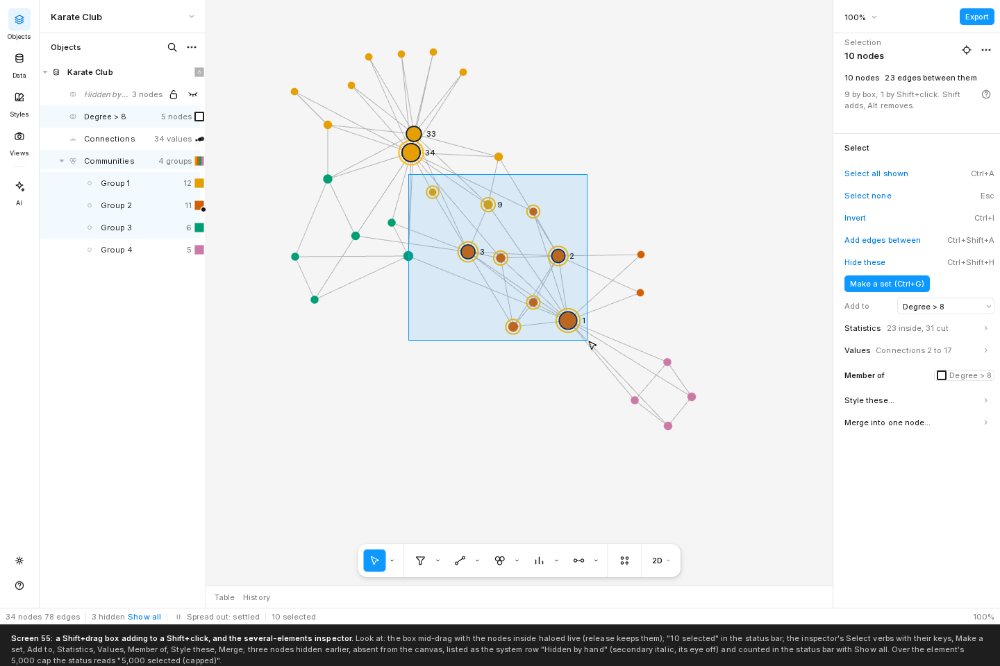
55. Box selection and the several-elements inspector
Look at: the box mid-drag with the nodes inside haloed live (release keeps them); "10 selected" in the status bar; the inspector's Select verbs with their keys, Make a set, Add to, Statistics, Values, Member of, Style these, Merge; three nodes hidden earlier, absent from the canvas, listed as the system row "Hidden by hand" (secondary italic, its eye off) and counted in the status bar with Show all. Over the element's 5,000 cap the status reads "5,000 selected (capped)".
Open the HTMLPNG

56. Edges table and the edge inspector
Look at: the dock on Edges 613 with source and target as links (a click opens that node), id, the object columns, one row selected; on the canvas that edge drawn thick in the selection gold and its two ends outlined and labelled; the Edge inspector with About (from, to, weight, Values, Member of, Look, Notes) and the Attributes and Endpoints tabs. Until the element can pick edges on the canvas (#319), this table and a node's Links tab are the ways to reach one.
Open the HTMLPNG
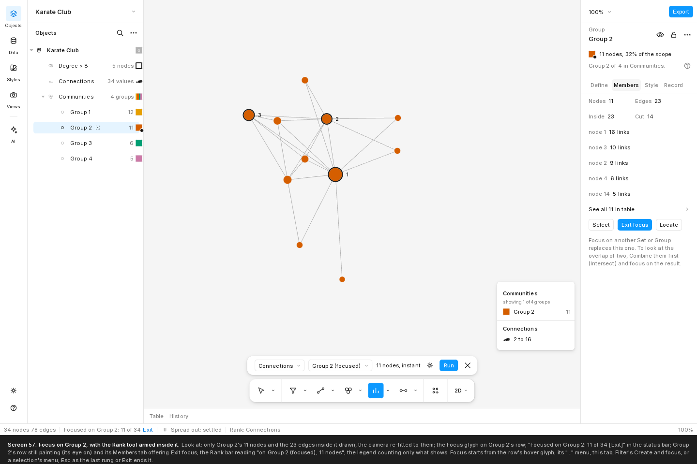
57. Focus on a group
Look at: only Group 2's 11 nodes and the 23 edges inside it drawn, the camera re-fitted to them; the Focus glyph on Group 2's row; "Focused on Group 2: 11 of 34 [Exit]" in the status bar; Group 2's row still painting (its eye on) and its Members tab offering Exit focus; the Rank bar reading "on Group 2 (focused), 11 nodes"; the legend counting only what shows. Focus starts from the row's hover glyph, its "..." menu, this tab, Filter's Create and focus, or a selection's menu; Esc as the last rung or Exit ends it.
Open the HTMLPNG

58. Keyboard focus on the canvas
Look at: the blue focus ring on node 34, outside its outline and distinct from the gold selection halo (nothing is selected, so the inspector still shows the Dataset); the dashed blue edge to node 9, where ] (the next neighbour clockwise) goes; the live caption above the toolbar, which a screen reader hears through an ARIA live region; the canvas part of Help > Keyboard shortcuts in the inset. The camera pans only when the focused node would leave the screen.
Open the HTMLPNG
Filters, sets and paths
Filter by values, range and rule, edge filters, patterns, neighbours, combining, members, all routes, editing a Set.
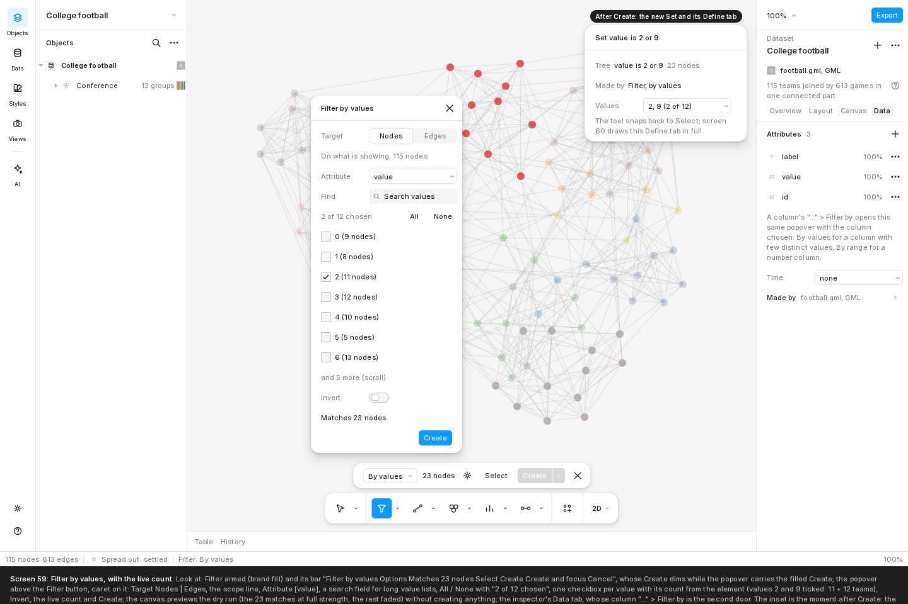
59. Filter by values
Look at: Filter armed (brand fill) and its bar "Filter by values Options Matches 23 nodes Select Create Create and focus Cancel", whose Create dims while the popover carries the filled Create; the popover above the Filter button, caret on it: Target Nodes | Edges, the scope line, Attribute [value], a search field for long value lists, All / None with "2 of 12 chosen", one checkbox per value with its count from the element (values 2 and 9 ticked: 11 + 12 teams), Invert, the live count and Create; the canvas previews the dry run (the 23 matches at full strength, the rest faded) without creating anything; the inspector's Data tab, whose column "..." > Filter by is the second door. The inset is the moment after Create: the tool snaps back and a Set "value is 2 or 9" appears; screen 60 shows its Define tab.
Open the HTMLPNG

60. Filter by range over a histogram
Look at: the By range popover with "Of [Bridges (Measure)]" (every numeric attribute and every Measure in the tree), the histogram of the real betweenness values with lin | log and the dragged band tinted between its two handles, the Min / Max fields the band writes, Invert, the live "Matches 38 nodes", Select live and Create disabled while #192 is open (in the popover and in the bar, which reads "Create (not yet)"); the canvas previewing the 38 matches, the rest faded, the earlier Set's ink outlines still painted; the inspector showing that earlier Set "value is 2 or 9" on its Define tab: Made by, Target, Attribute, the chosen values as one editable select, "+ Rule" to add an AND line, Invert, Within, Advanced and the Live word.
Open the HTMLPNG

61. Filter by rule, built or typed
Look at: the By rule popover in Build mode: Write [Build | Expression], Target, the scope line, Match [All | Any] (All is AND, Any is OR), two rule lines, each [Not] [attribute or object] [operator] [value] [x], the second with Not pressed, "+ Rule", the live "Matches 5 nodes"; the canvas previewing those nodes; the inspector on the earlier Set "Big hubs" switched to Expression: the typed rule in a code field with the misspelt name underlined in red, the error under it naming the likely name, the autocomplete list from the catalogue's names and functions, the members kept from the last valid rule, Invert, Within, and "Re-filters on Enter".
Open the HTMLPNG

62. Filtering edges
Look at: the Filter popover with Target switched to Edges, so the scope line counts edges and "Of" lists edge attributes only; the edge-weight histogram, Min 4 and Max 7; "Their nodes [Keep all nodes]" (or "Only their endpoints"); the live "Matches 35 of 78 edges"; the canvas with matching edges drawn full strength and the rest faded, nodes untouched; the bar says edges; the Data tab with a separate Edge attributes section, whose "..." is the second door. The inset is the moment after Create: an edge Set "weight >= 4" counted in edges, with a line chip, whose Style tab paints EDGES rows.
Open the HTMLPNG

63. Pattern search and its matches
Look at: one Set "Pattern: Triangle" (the union of every match, 32 nodes) rather than 45 rows; its summary counts matches and nodes; its Define tab is the pattern editor the Filter > Pattern popover showed: Template [Triangle v] (Triangle, Star of 3, Chain of 3, Square, Clique of 4, Custom), the pattern drawn as slots a, b, c and their edges (slot a picked, its constraint in the row under it; click a cell for [attribute] [is] [value]), "+ Slot or edge", Direction, Invert, Within; the dock's Table tab with a "Matches 45" sub-tab, one row per match, match 3 selected; the canvas drawing every match faintly and the current match thick with its nodes labelled; the dock's footer "Match 3 of 45" with Previous and Next, which Tab and Shift+Tab also step.
Open the HTMLPNG

64. Neighbours tool armed
Look at: Neighbours armed, seeded from the selection (BrighamYoung, haloed and labelled); the bar's sentence names the centre as a removable chip, the steps and the edge types (the direction select appears only on directed data), then the live size "13 nodes 35 edges" and Options, Select, Create, Create and focus, Cancel; the Options popover with the same fields plus "Keep edges" (all edges among the members, or only those to the centre) and a table of the size at 1 and 2 steps so the reader sees the jump before choosing; the canvas preview; the node's Links tab, whose "Neighbours (E)" button is the second door. Clicking another node re-seeds; Enter creates the Set "Around BrighamYoung".
Open the HTMLPNG

65. Combining two Sets
Look at: two tree rows selected with Ctrl+click (the Path and Group 2) and every member of both haloed; the inspector's one tab: COMBINE lists the four verbs with their keys and the size each result would have (Union 14, Intersect 3, Subtract 3, Exclude 11), so the reader picks by outcome; Subtract states its order in words ("Path minus Group 2") with Swap, rather than depending silently on row order; the note that the result is a linked Set; Compare, Focus on these, the shared Style row reading "Mixed", and Hide all, Lock all, Delete (2). Insets: the new linked Set after Intersect, and the verbs disabled with the reason when a Measure or a Grouping is in the selection.
Open the HTMLPNG

66. A path's Members tab
Look at: Path 12 -> 30 just created and selected, the inspector on Members: Select, Focus and Locate as the tab's first row; Nodes 6 | Edges 5; Inside 6 | Cut 36 (edges among the members, and edges leaving them, each with an (i) that defines it); Density; Hops 5 | Cost 5.0 (a path only); the members in hop order with the running cost, the start row tinted because Tab steps from it; "Open all 6 in table"; Profile collapsed with its summary, and open in the inset: how the members split over a Grouping, with a count and share per group (a Group's Members tab carries the same disclosure). The canvas keeps screen 8's paint; the six members are haloed.
Open the HTMLPNG
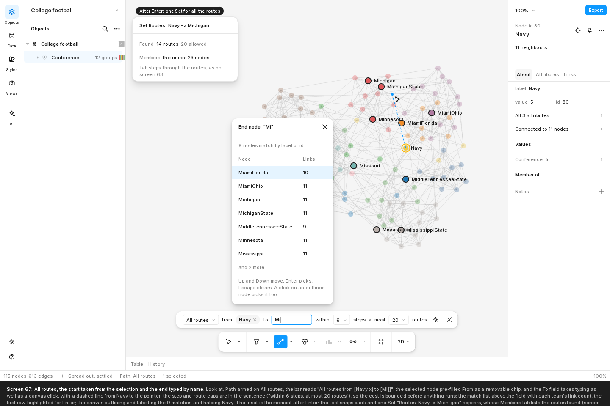
67. All routes, with the end node typed by name
Look at: Path armed on All routes; the bar reads "All routes from [Navy x] to [Mi|]": the selected node pre-filled From as a removable chip, and the To field takes typing as well as a canvas click, with a dashed line from Navy to the pointer; the step and route caps are in the sentence ("within 6 steps, at most 20 routes"), so the cost is bounded before anything runs; the match list above the field with each team's link count, the first row highlighted for Enter; the canvas outlining and labelling the 9 matches and haloing Navy. The inset is the moment after Enter: the tool snaps back and one Set "Routes: Navy -> Michigan" appears, whose Members tab lists the routes found (screen 63's Tab stepping) and "14 found, 20 allowed".
Open the HTMLPNG

68. Editing a hand-made Set's members
Look at: the fixed Set "Shortlist" selected, its Members tab in edit mode: "Editing" with "Add selection (3)" (the three haloed, labelled teams on the canvas) and Done; the count "12" with the two removed teams named; each member row with a remove button; the undo note. On the canvas the members keep their ink outline and the two just removed are faded and labelled until Done. The inset is the same removal on a node's About tab: its "Member of" chip for a fixed Set carries an x (never for a rule, path or group Set, whose members come from their definition).
Open the HTMLPNG
Analysis results
Values, plots, groups, summary graphs, the record, batches, scope, findings, what breaks, compare, time, notes, the assistant.
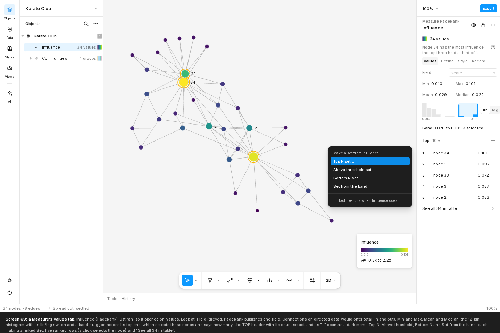
69. A Measure's Values tab
Influence (PageRank) just ran, so it opened on Values. Look at: Field (greyed: PageRank publishes one field; Connections on directed data would offer total, in and out); Min and Max, Mean and Median; the 12-bin histogram with its lin/log switch and a band dragged across its top end, which selects those nodes and says how many; the TOP header with its count select and its "+" open as a dark menu: Top N, Above threshold, Bottom N and Set from the band, each making a linked Set; five ranked rows (a click selects the node) and "See all 34 in table".
Open the HTMLPNG
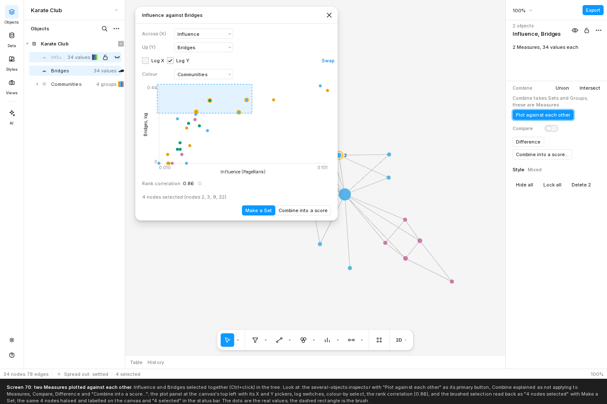
70. Two Measures plotted against each other
Influence and Bridges selected together (Ctrl+click) in the tree. Look at: the several-objects inspector with "Plot against each other" as its primary button, Combine explained as not applying to Measures, Compare, Difference and "Combine into a score..."; the plot panel at the canvas's top left with its X and Y pickers, log switches, colour-by select, the rank correlation (0.86), and the brushed selection read back as "4 nodes selected" with Make a Set; the same 4 nodes haloed and labelled on the canvas and "4 selected" in the status bar. The dots are the real values; the dashed rectangle is the brush.
Open the HTMLPNG
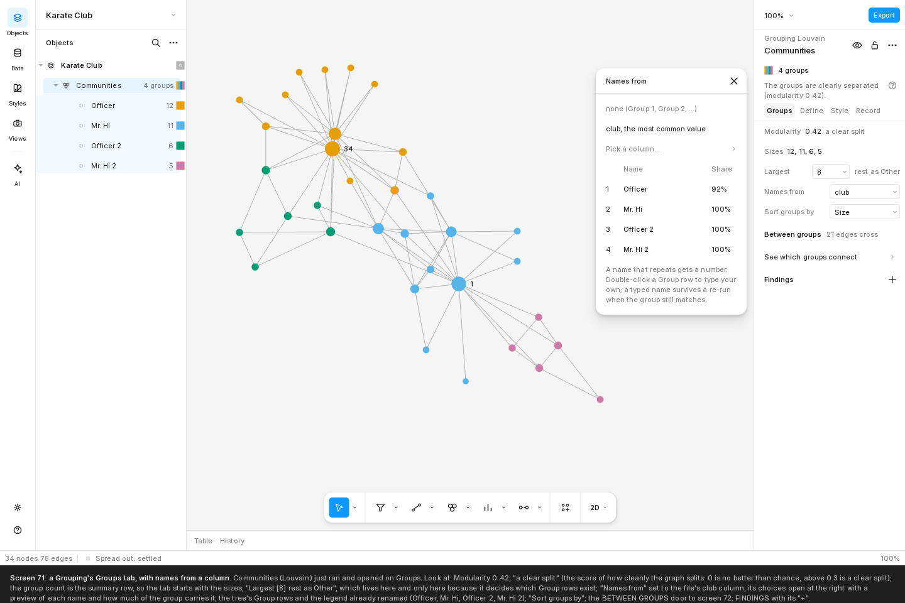
71. A Grouping's Groups tab, with names from a column
Communities (Louvain) just ran and opened on Groups. Look at: Modularity 0.42, "a clear split" (the score of how cleanly the graph splits: 0 is no better than chance, above 0.3 is a clear split); the group count is the summary row, so the tab starts with the sizes; "Largest [8] rest as Other", which lives here and only here because it decides which Group rows exist; "Names from" set to the file's club column, its choices open at the right with a preview of each name and how much of the group carries it; the tree's Group rows and the legend already renamed (Officer, Mr. Hi, Officer 2, Mr. Hi 2); "Sort groups by"; the BETWEEN GROUPS door to screen 72; FINDINGS with its "+".
Open the HTMLPNG

72. Groups collapsed into a summary graph
Communities selected, "Collapse all" pressed, then Group 2 double-clicked to expand it in place. Look at: three large outlined nodes, one per collapsed group, sized by members and labelled "Group 1 12"; Group 2's eleven members drawn as usual; merged edges whose width is the number of edges they stand for; the legend's size and width blocks; the status bar's "3 groups collapsed (23 nodes) [Exit]", Exit being Expand all; the Groups tab's BETWEEN GROUPS section ranking every pair of groups by the edges between them. Nothing in the data changed: collapsing is a way of drawing, saved with the Grouping and in a View ("How groups connect"). Each collapsed group sits at its members' centre.
Open the HTMLPNG

73. The Record tab and its Export row
Path: 1 -> 34 selected, on Record. Look at: MADE BY with Method (its (i) explains Dijkstra), Parameters collapsed to its summary, Scope, Engine, Time; Caveats open with the one caveat this run really has (4 two-hop routes tie); "Copy methods" (the methods text: a sentence for a paper) and "Copy command" (the JSON that reproduces it); the Export row, its list open as a dark menu with the three exports a path offers and what the chosen one holds; NOTES with its "+". A run made by the assistant or a recipe adds one row, "Assistant: <the request>" or "Recipe: <name>, step 3", under Time. The inset is a Measure's Record: the same shape, its list reading Ranked list, CSV.
Open the HTMLPNG

74. Several runs at once, and a parameter sweep
Two ways of running many things. Look at: Rank armed, its flyout open with "Several..." pressed and the checklist beside it, every row with its cost, the total, and one filled button "Create 3" (the bar's Run dims while the popover carries the primary) (after it: three Measure rows appear at once, the first computing, the others reading "queued, 2nd" and "queued, 3rd", and the status bar reads "Computing 1 of 3 [Cancel all]"). Below, the Table dock on its new Findings tab showing an earlier Groups > Sweep... of Communities' resolution from 0.50 to 1.50 in 5 steps: one row per value with groups, modularity and group sizes, the best modularity row highlighted, and "Make an object" turning one row into a normal Communities row. The sweep is a Finding, not a tree row; its door is the Overview's FINDINGS row "Sweep 5 values Open in table".
Open the HTMLPNG

75. Choosing what part of the graph a run covers
Look at: the secondary bar reading "Rank by [Bridges] on Group 2, 11 nodes, instant", its scope list open above it (Everything, What is showing, The selection, then every Set and Group with its size, Group 2 chosen); the earlier run "Connections (Group 2)" in the tree, painting only Group 2's eleven members from 1 to 10 links inside the group while every other node keeps its plain grey (no Focus, nothing hidden, "34 nodes 78 edges" still showing); its Record tab with "Scope: Within Group 2, 11 nodes" and a sentence saying what that means. The name says the scope until renamed.
Open the HTMLPNG
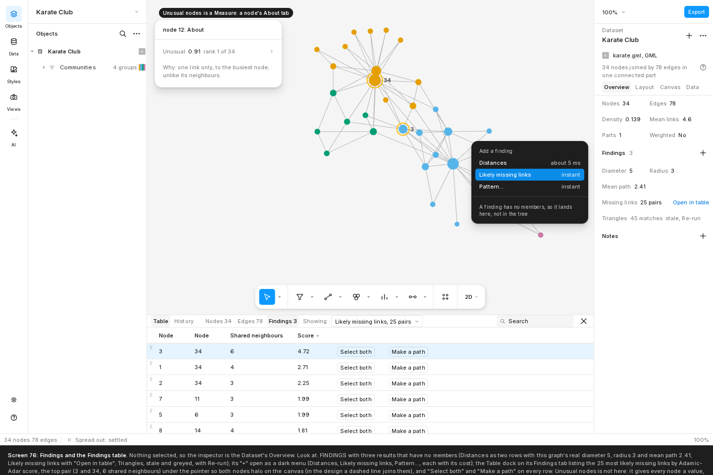
76. Findings and the Findings table
Nothing selected, so the inspector is the Dataset's Overview. Look at: FINDINGS with three results that have no members (Distances as two rows with this graph's real diameter 5, radius 3 and mean path 2.41; Likely missing links with "Open in table"; Triangles, stale and greyed, with Re-run); its "+" open as a dark menu (Distances, Likely missing links, Pattern..., each with its cost); the Table dock on its Findings tab listing the 25 most likely missing links by Adamic-Adar score, the top pair (3 and 34, 6 shared neighbours) under the pointer so both nodes halo on the canvas (in the design a dashed line joins them), and "Select both" and "Make a path" on every row. Unusual nodes is not here: it gives every node a value, so it is a Measure under Rank, and a node's About tab shows its score and the reason (the inset; the score is illustrative).
Open the HTMLPNG
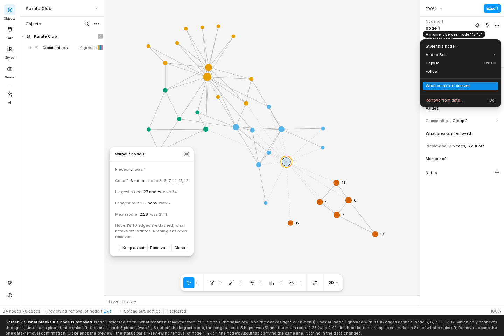
77. What breaks if a node is removed
Node 1 selected, then "What breaks if removed" from its "..." menu (the same row is on the canvas right-click menu). Look at: node 1 ghosted with its 16 edges dashed; node 5, 6, 7, 11, 17, 12, which only connects through it, tinted as a piece that breaks off; the result card: 3 pieces (was 1), 6 cut off, the largest piece, the longest route 5 hops (was 5) and the mean route 2.28 (was 2.41); its three buttons (Keep as set makes a Set of what breaks off; Remove... opens the one data-removal confirmation; Close ends the preview); the status bar's "Previewing removal of node 1 [Exit]"; the node's About tab carrying the same line. Nothing in the data changed.
Open the HTMLPNG

78. Two objects compared side by side
Communities and Club (the file's club column as a Grouping) selected together, Compare switched on. Look at: the several-objects inspector with Compare on, "Right pane [Same]" (a View puts a different time window or Focus in the right pane), Link cameras, and FINDINGS: they agree on 33 of 34 nodes, adjusted Rand 0.46 (1 is identical, 0 is chance), "Select the 1 that differs" and "Make a set"; the legend naming both panes; the 1 node on which they disagree ringed and labelled; the status bar's "Comparing Communities with Club [Exit]" (Escape closes the second pane). The canvas is two panes with one camera, left painted by Communities and right by Club, each with its own legend; a click in one halos the node in both. Two Measures show "Difference" instead of the agreement.
Open the HTMLPNG
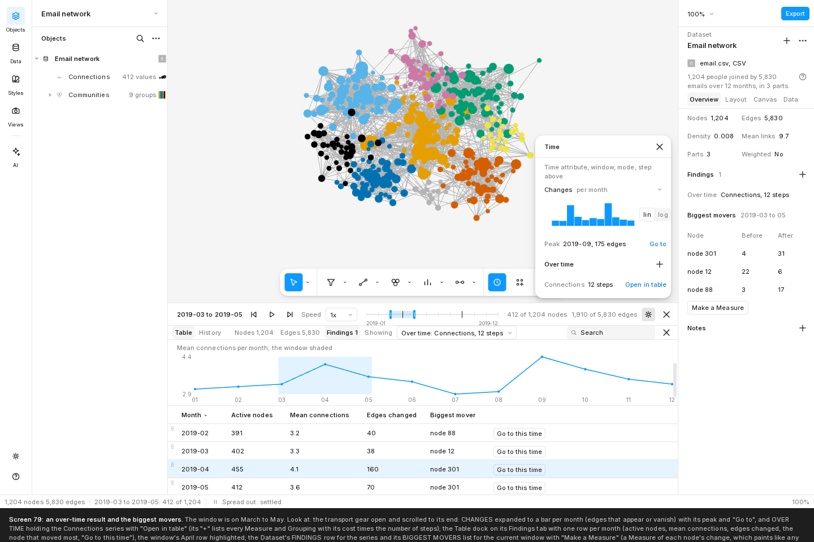
79. An over-time result and the biggest movers
The window is on March to May. Look at: the transport gear open and scrolled to its end: CHANGES expanded to a bar per month (edges that appear or vanish) with its peak and "Go to", and OVER TIME holding the Connections series with "Open in table" (its "+" lists every Measure and Grouping with its cost times the number of steps); the Table dock on its Findings tab with one row per month (active nodes, mean connections, edges changed, the node that moved most, "Go to this time"), the window's April row highlighted; the Dataset's FINDINGS row for the series and its BIGGEST MOVERS list for the current window with "Make a Measure" (a Measure of each node's change, which paints like any other). One home for the chart: the dock's Findings tab draws the series as a line with the window shaded above the rows; the gear only starts it.
Open the HTMLPNG
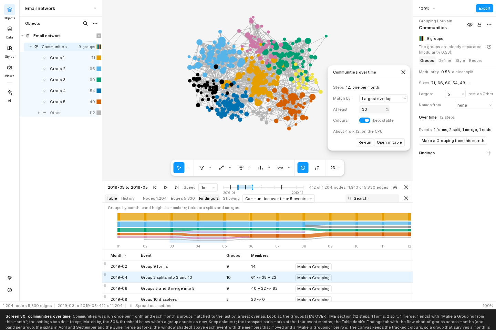
80. Communities over time
Communities was run once per month and each month's groups matched to the last by largest overlap. Look at: the Groups tab's OVER TIME section (12 steps; 1 forms, 2 split, 1 merge, 1 ends) with "Make a Grouping from this month"; the settings beside it (steps, Match by, the 30% threshold below which a group counts as new, Keep colours) ; the transport bar's marks at the four event months; the Table dock's Findings tab with the flow chart of groups across months (one band per group, the splits in April and September and the June merge as forks, the window shaded) above each event with the members that moved and a "Make a Grouping" per row. The canvas keeps the tracked colours, so a group that survives a month is the same colour before and after. The entry is the Grouping's "..." menu ("Communities over time...") or the gear's OVER TIME "+".
Open the HTMLPNG

81. Notes, the note list and canvas callouts
The reader pressed N, clicked node 34 and is typing. Look at: the node's About tab with NOTES open in edit mode (the text with its cursor, tags, who and when, Callout on, Done and Delete; Ctrl+Enter is Done); node 34's callout on the canvas, a box with a leader line carrying the text, and the speech-bubble markers on nodes 1 and 34; the note list in the inset, grouped by what each note is about, with an Orphaned group whose node was removed from the data, offering Reattach... and Delete. The list lives in the Dataset Overview's NOTES disclosure and opens from the status bar's "4 notes"; Canvas > Note markers (Shift+N) hides every marker.
Open the HTMLPNG

82. The assistant in the AI panel
Backtick (or the AI rail button) opened the AI panel; the Objects rail button carries its dot because the assistant added objects while the tree was hidden. Look at: the panel's scope, "What is showing, 34 nodes", which is what the assistant runs on and what its replies name; two turns; under the first a collapsed tool-call row ("> Ran Rank > Bridges", expandable to its JSON, Copy command) and "Made: Bridges (Betweenness)" linked to the tree row it made (selected, its Record tab reading "Assistant: Which people hold the club together?"); the second asked for a four-minute run, so its row landed waiting in the tree with its Run button, and the reply says so; the composer with its microphone and Send; and, always visible above the composer in the design, the line saying what data leaves the browser, with a link to Settings. The inset is the tab before a provider is set: one line and "Choose a provider...", opening Settings > Assistant. The tree rows the assistant made carry its sparkle.
Open the HTMLPNG
Layout, look, export, present and VR
Layouts, pinning, the canvas look, labels, hover, palettes, channels, saved styles, export, Present mode and VR.

83. The Dataset's Layout tab, with the layout list open
Nothing selected, so the inspector shows the Dataset; the Layout tab was opened from its tab or from the status bar's "Spread out: settling 62%" chip. Look at: the Layout select with its gear (engine, forces, pace, seed); the transport rows (Pause, Step, and Re-run with the same or a new seed) with the progress word; Apply to (Whole graph, or a Set or Group: screen 85); Dimensions and the line saying where it runs. The open list is the element's layout catalogue in plain names: the recommendation first with its reason, the current layout tinted, the layouts that need an input saying which (screen 84), and Keep positions greyed because karate.gml carries no coordinates.
Open the HTMLPNG
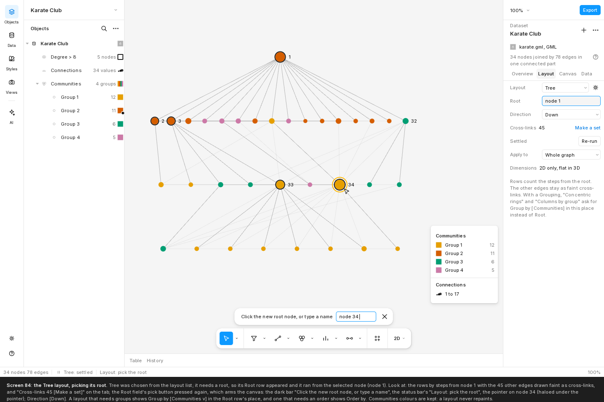
84. The Tree layout, picking its root
Tree was chosen from the layout list; it needs a root, so its Root row appeared and it ran from the selected node (node 1). Look at: the rows by steps from node 1 with the 45 other edges drawn faint as cross-links, and "Cross-links 45 [Make a set]" on the tab; the Root field's pick button pressed again, which arms the canvas: the dark bar "Click the new root node, or type a name", the status bar's "Layout: pick the root", the pointer on node 34 (haloed under the pointer); Direction [Down]. A layout that needs groups shows Group by [Communities v] in the Root row's place, and one that needs an order shows Order by. Communities colours are kept: a layout never repaints.
Open the HTMLPNG

85. Arranging only one group
Group 2's row menu is drawn beside its row, tagged as the moment before, with "Arrange only these..." highlighted (the same row is on a Set's menu, the several-elements inspector and the canvas right-click). Look at: the eleven members on a ring around where they were, haloed because they are selected, while the other 23 nodes stayed put; the Dataset's Layout tab with Apply to [Group 2] first, then Layout [Ring] and Order by; "Placed 11 of 34" with Re-run; the rest's layout named and kept; [Back to whole graph]; the status bar's layout chip "Ring on Group 2". The step is one entry in History, undone by Ctrl+Z.
Open the HTMLPNG
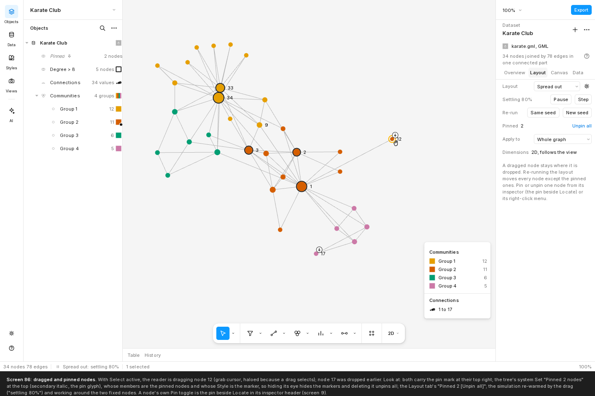
86. Dragged and pinned nodes
With Select active, the reader is dragging node 12 (grab cursor, haloed because a drag selects); node 17 was dropped earlier. Look at: both carry the pin mark at their top right; the tree's system Set "Pinned 2 nodes" at the top (secondary italic, the pin glyph), whose members are the pinned nodes and whose Style is the marker, so hiding its eye hides the markers and deleting it unpins all; the Layout tab's "Pinned 2 [Unpin all]"; the simulation re-warmed by the drag ("settling 80%") and working around the two fixed nodes. A node's own Pin toggle is the pin beside Locate in its inspector header (screen 9).
Open the HTMLPNG

87. The Dataset's Canvas tab, hidden elements drawn faintly
Karate Club focused on Group 1 (the status bar's mask). Look at: the 12 members at full strength and the other 22 nodes and their edges at about 15 percent, because "Show hidden faintly" is on (off, they are absent, as on every other screen); the Canvas tab's rows in order: Background (Follow theme), Look, Labels and Tooltip each with a gear (screens 88 and 89), Edge labels, Legend and Minimap with their keys, Note markers, the faint switch with its caption, and the DEFAULT LOOK section (the node and edge defaults under every object). Arrows is drawn only for directed data. The Look list: the base looks, the current one tinted, and "Save current as look...".
Open the HTMLPNG

88. Label choices and the Labels popover
The Canvas tab's Labels row reads "Top 6 by Bridges"; its gear opens this popover. Look at: Show (None, All, Selected only, Top N by a value, Members of a Set), By [Bridges] with the count, Text from [label] (any column, or the id); then the text's size, colour and backing, Place (right, below, centre), Wrap at 20 characters on 2 lines (longer names are cut with an ellipsis), Face the camera (for 3D), Fade with distance, and Avoid overlaps, whose caption says what yields. The six labels on the canvas are the six top teams by betweenness. Edge labels is the next row: None, or a column of the edges. A Set's Style tab can add its own Label row, which wins on its members.
Open the HTMLPNG

89. Hovering a node: tooltip and neighbours
The pointer rests on BrighamYoung; nothing is selected. Look at: the dark tooltip with the label and the three values the Tooltip row asks for (conference name, Bridges with its rank, neighbours); its 12 neighbours and the edges to them at full strength with labels beyond the budget, everything else dimmed; the tree rows of the objects it belongs to (Top 10 by Bridges, Conference) in the hover fill while the selection stays empty. The Canvas tab's Tooltip row [Label + 3 values] and its gear choose the values; Settings > Canvas holds "Highlight neighbours on hover [Off | Neighbours | 2 steps]" and the tooltip delay. Leaving the node restores the picture; nothing is written to the tree.
Open the HTMLPNG
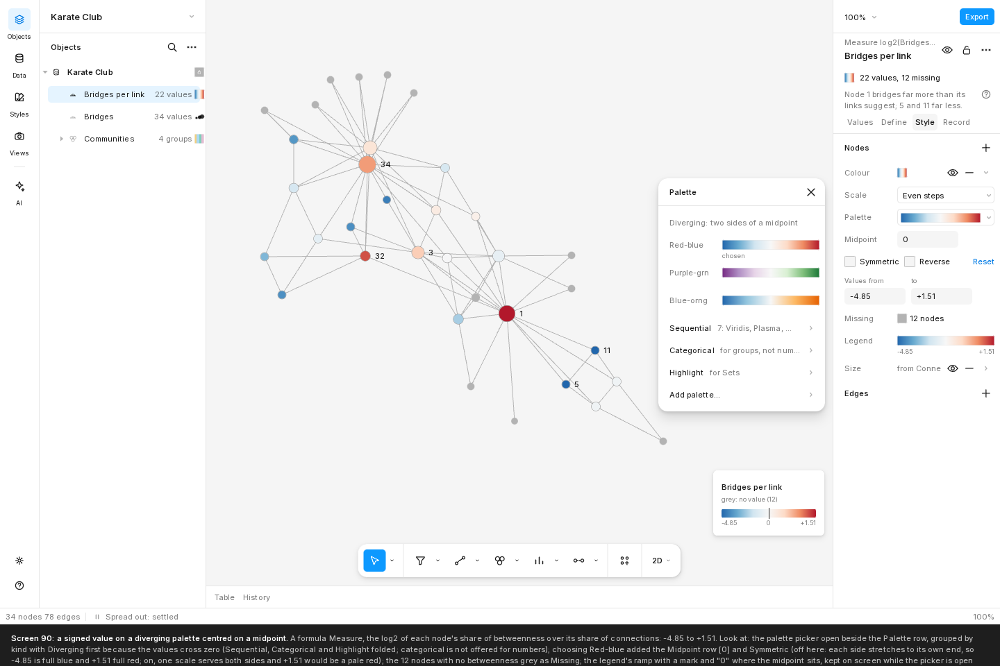
90. A diverging palette centred on a midpoint
A formula Measure, the log2 of each node's share of betweenness over its share of connections: -4.85 to +1.51. Look at: the palette picker open beside the Palette row, grouped by kind with Diverging first because the values cross zero (Sequential, Categorical and Highlight folded; categorical is not offered for numbers); choosing Red-blue added the Midpoint row [0] and Symmetric (off here: each side stretches to its own end, so -4.85 is full blue and +1.51 full red; on, one scale serves both sides and +1.51 would be a pale red); the 12 nodes with no betweenness grey as Missing; the legend's ramp with a mark and "0" where the midpoint sits, kept on screen while the picker is open because the picker is anchored to the panel. Node 1 is the deepest red: it bridges most for its links.
Open the HTMLPNG
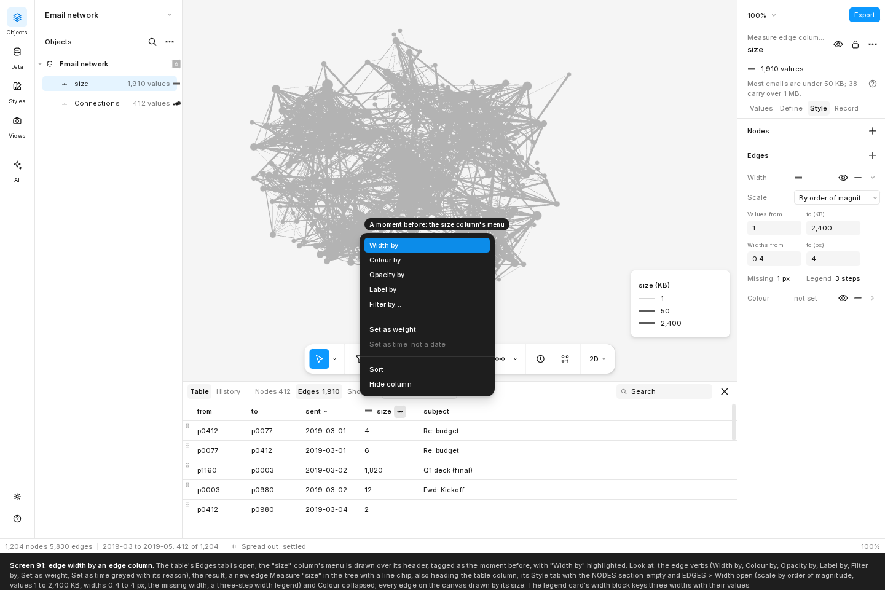
91. Edge width by an edge column
The table's Edges tab is open; the "size" column's menu is drawn over its header, tagged as the moment before, with "Width by" highlighted. Look at: the edge verbs (Width by, Colour by, Opacity by, Label by, Filter by, Set as weight; Set as time greyed with its reason); the result, a new edge Measure "size" in the tree with a line chip, also heading the table column; its Style tab with the NODES section empty and EDGES > Width open (scale by order of magnitude, values 1 to 2,400 KB, widths 0.4 to 4 px, the missing width, a three-step width legend) and Colour collapsed; every edge on the canvas drawn by its size. The legend card's width block keys three widths with their values.
Open the HTMLPNG
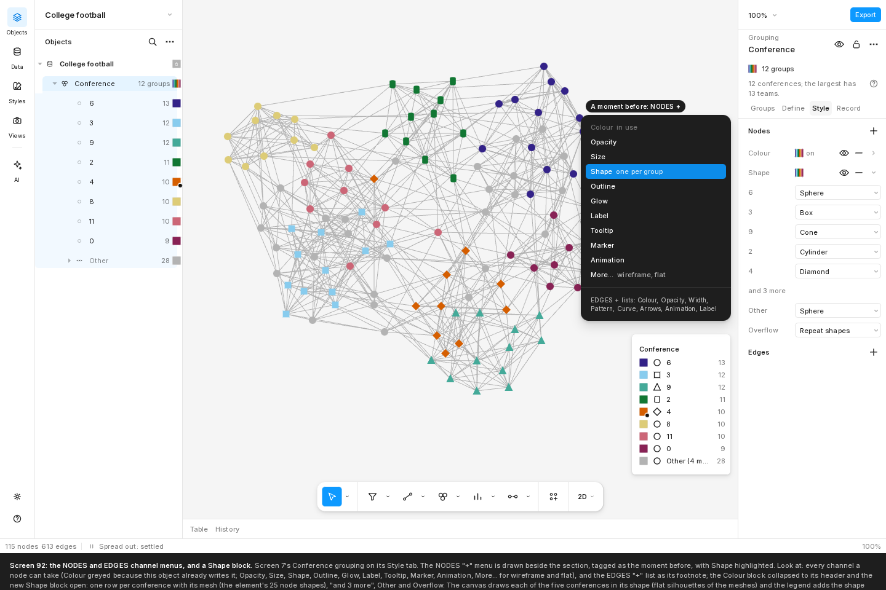
92. The NODES and EDGES channel menus, and a Shape block
Screen 7's Conference grouping on its Style tab. The NODES "+" menu is drawn beside the section, tagged as the moment before, with Shape highlighted. Look at: every channel a node can take (Colour greyed because this object already writes it; Opacity, Size, Shape, Outline, Glow, Label, Tooltip, Marker, Animation, More... for wireframe and flat), and the EDGES "+" list as its footnote; the Colour block collapsed to its header and the new Shape block open: one row per conference with its mesh (the element's 25 node shapes), "and 3 more", Other and Overflow. The canvas draws each of the five conferences in its shape (flat silhouettes of the meshes) and the legend adds the shape beside each swatch.
Open the HTMLPNG

93. Styling one node
From BrighamYoung's inspector, Look > "+" > "Style this node..." (screen 9 draws the Look row; the node's right-click menu has the same row). Look at: a one-node Set "BrighamYoung" at the top of the tree, selected, painting above Top 10, Bridges and Conference; its Style tab lists the node's look channel by channel: the new Colour override (magenta, with its eye and minus) above the Colour it inherits from Conference, then Size from Bridges and Outline from Top 10 as locked inherited rows, each of which becomes an override on a click; only BrighamYoung turned magenta; the legend gains a one-row block for the Set. The Saved style row saves this look for other objects (screen 94).
Open the HTMLPNG
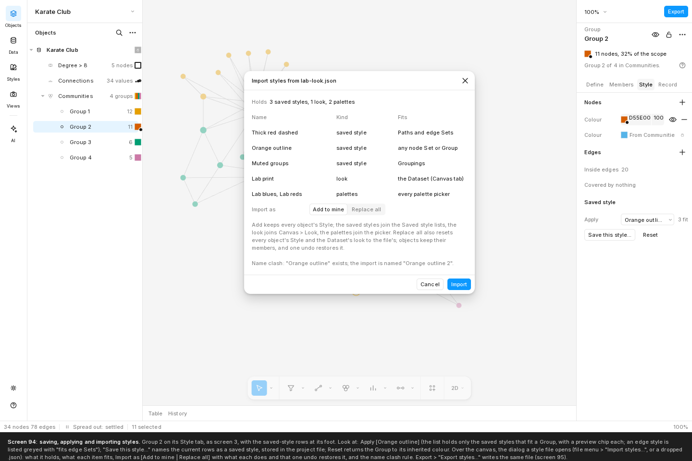
94. Saving, applying and importing styles
Group 2 on its Style tab, as screen 3, with the saved-style rows at its foot. Look at: Apply [Orange outline] (the list holds only the saved styles that fit a Group, with a preview chip each; an edge style is listed greyed with "fits edge Sets"); "Save this style..." names the current rows as a saved style, stored in the project file; Reset returns the Group to its inherited colour. Over the canvas, the dialog a style file opens (file menu > "Import styles...", or a dropped .json): what it holds, what each item fits, Import as [Add to mine | Replace all] with what each does and that one undo restores it, and the name clash rule. Export > "Export styles..." writes the same file (screen 95).
Open the HTMLPNG
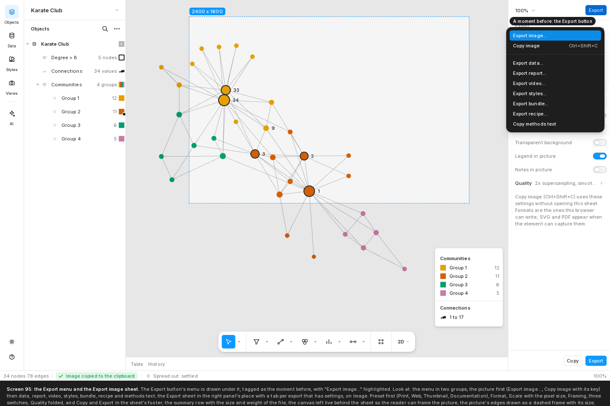
95. The Export menu and the Export image sheet
The Export button's menu is drawn under it, tagged as the moment before, with "Export image..." highlighted. Look at: the menu in two groups, the picture first (Export image..., Copy image with its key) then data, report, video, styles, bundle, recipe and methods text; the Export sheet in the right panel's place with a tab per export that has settings, on Image: Preset first (Print, Web, Thumbnail, Documentation), Format, Scale with the pixel size, Framing, three switches, Quality folded, and Copy and Export in the sheet's footer; the summary row with the size and weight of the file; the canvas left live behind the sheet so the reader can frame the picture, the picture's edges drawn as a dashed frame with its size; the status bar's confirmation from the last Copy image. Esc or the close button returns the inspector.
Open the HTMLPNG
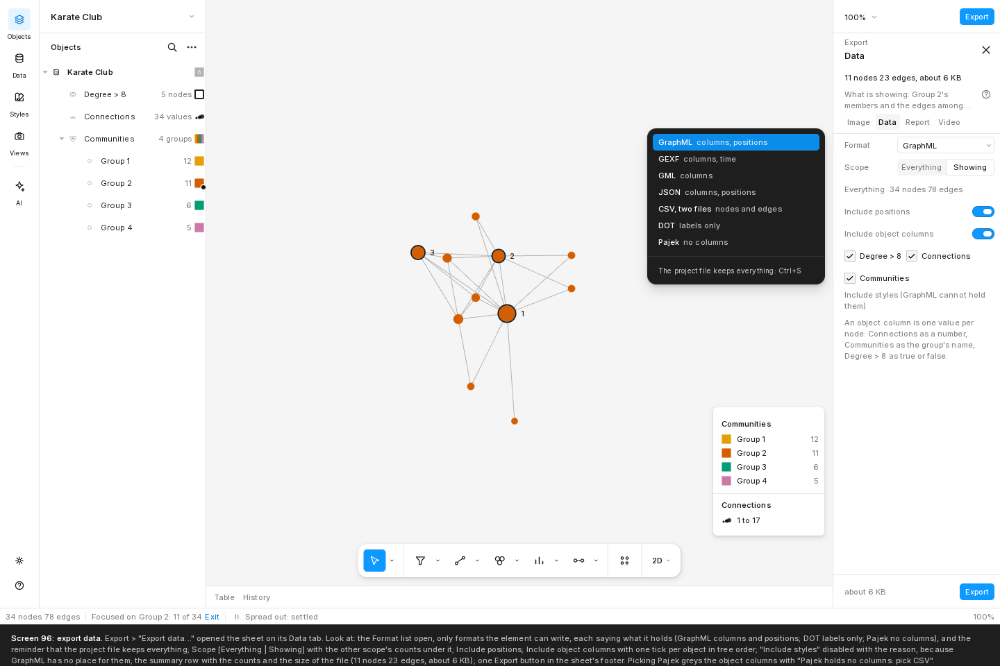
96. Export data
Export > "Export data..." opened the sheet on its Data tab. Look at: the Format list open, only formats the element can write, each saying what it holds (GraphML columns and positions; DOT labels only; Pajek no columns), and the reminder that the project file keeps everything; Scope [Everything | Showing] with the other scope's counts under it; Include positions; Include object columns with one tick per object in tree order; "Include styles" disabled with the reason, because GraphML has no place for them; the summary row with the counts and the size of the file (11 nodes 23 edges, about 6 KB); one Export button in the sheet's footer. Picking Pajek greys the object columns with "Pajek holds no columns: pick CSV".
Open the HTMLPNG

97. Export a report or a bundle
Export > "Export report..." opened the Report tab. Look at: OBJECTS, one tick per tree row in tree order (each becomes a section with its reading, its values or members, and its Record); SECTIONS: Statistics (the Dataset's Overview facts), Image, Legend, Methods (the methods text of every ticked object), Notes (greyed "none yet" when there are none); Format and the image settings ("As Export image" reuses the Image tab); the summary row's count and size. The Format list is open: HTML, Markdown, PDF, and Evidence bundle, a ZIP of the report, the project file, the data and the images, whose two choices (include the original data file; images at print size) take the Image row's place when it is picked. Export > "Export bundle..." opens this tab with the bundle chosen.
Open the HTMLPNG
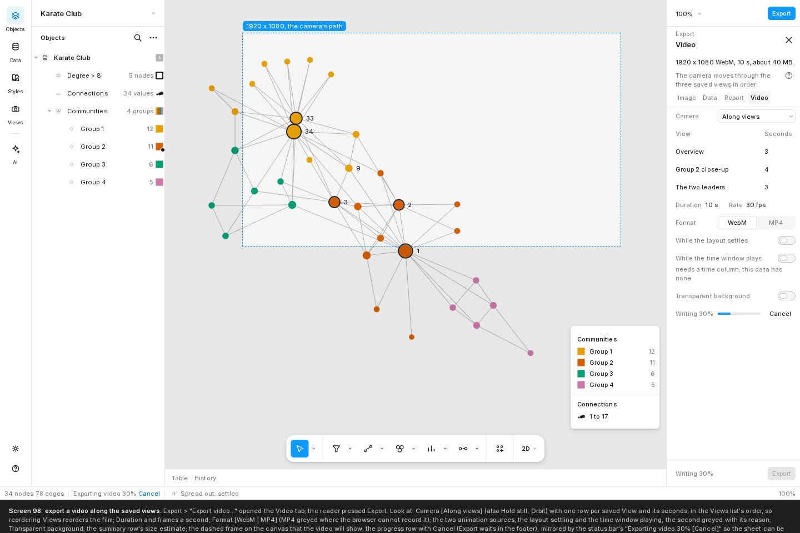
98. Export a video along the saved views
Export > "Export video..." opened the Video tab; the reader pressed Export. Look at: Camera [Along views] (also Hold still, Orbit) with one row per saved View and its seconds, in the Views list's order, so reordering Views reorders the film; Duration and frames a second; Format [WebM | MP4] (MP4 greyed where the browser cannot record it); the two animation sources, the layout settling and the time window playing, the second greyed with its reason; Transparent background; the summary row's size estimate; the dashed frame on the canvas that the video will show; the progress row with Cancel (Export waits in the footer), mirrored by the status bar's "Exporting video 30% [Cancel]" so the sheet can be closed while it runs.
Open the HTMLPNG

99. Present mode
File > Present (Shift+\), or the Views header's "..." > "Present from here". Look at: no panels, toolbar or status bar, the canvas filling the window; the second of five saved Views applied (Group 2 close-up: the camera on node 1 at 150%, Group 2 labelled); the pill "Group 2 close-up 2 of 5" with Previous, Next and "Exit (Esc)"; the legend kept because it is part of the picture. The Views list is the running order; Left and Right arrows or Page Up and Page Down step, Home returns to the first. With no saved Views the pill reads "No saved views: Exit" and Present shows the current view full-window.
Open the HTMLPNG

100. Entering and leaving VR
The view-mode button's menu, VR row, "Showing >" opens "Enter VR showing", drawn beside it, tagged as the moment before, with Group 2 highlighted. Look at: Everything with its count, then every Set and Group with theirs (Everything greyed with the headset's limit in its tooltip above 10,000 nodes); a plain click on VR takes what is showing. During the session both panels minimise, the status bar reads "Focused on Group 2: 11 of 34 [Exit] VR [Exit]", and Esc or Exit returns. Back at the desk: the camera restored, the two objects made in the headset (a path asked for by voice, a Set of node 34's neighbours) at the top of the tree marked new until the next click, and "Back from VR: 2 objects added" for a few seconds. AR works the same way.
Open the HTMLPNG
Other screens

104. The Data panel
Email network, nothing selected. ASSUMPTION the owner may correct: the cut-off "data should ..." is read as round-4 section 2.4. Look at: Data active on the rail; the dataset with its count and source (Reload and "..." on hover, screen 105); Roles as selects of real columns, Time set to sent, which is why the Time button (clock) is on the toolbar (the fifth role, Type, is left out for height); columns split into nodes and edges, each with type glyph, role chip and completeness bar; the import report in one line ("12 rejected" opens the table's Rejected tab); the contacts.csv join; Open table pinned at the foot.
Open the HTMLPNG
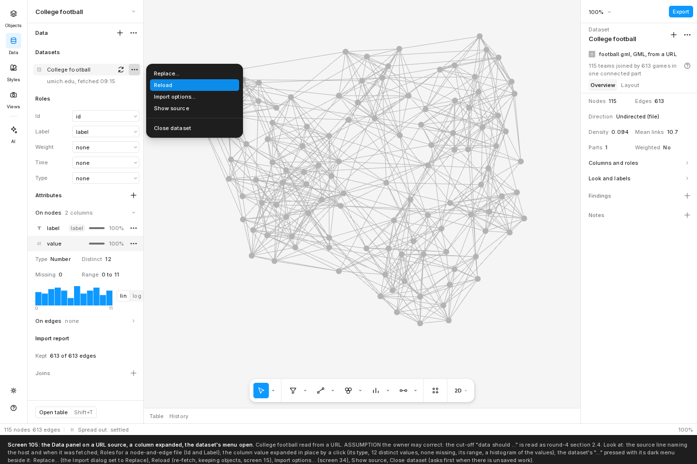
105. The Data panel: a URL source, a column expanded, the dataset menu
College football read from a URL. ASSUMPTION the owner may correct: the cut-off "data should ..." is read as round-4 section 2.4. Look at: the source line naming the host and when it was fetched; Roles for a node-and-edge file (Id and Label); the column value expanded in place by a click (its type, 12 distinct values, none missing, its range, a histogram of the values); the dataset's "..." pressed with its dark menu beside it: Replace... (the Import dialog set to Replace), Reload (re-fetch, keeping objects, screen 15), Import options... (screen 34), Show source, Close dataset (asks first when there is unsaved work).
Open the HTMLPNG

106. The Styles panel
Styles (Alt+3) is the active rail item. Look at: LOOK (the Look select, background, the default node and edge); PAINT ORDER, the tree's objects by what they paint, top wins: Bridges' Colour is struck and its chip faded because Communities above it colours every node (the tooltip says so and how to fix it; dragging a row moves it in the tree too), Dataset defaults locked at the bottom; LABELS; LEGEND (switch, key L; Sets; position); Canvas and Library folded; FILES: Import styles... and Export styles.... Inset: Library > Palettes, which object uses which. The title row's "+" is Save current look... (screen 111).
Open the HTMLPNG
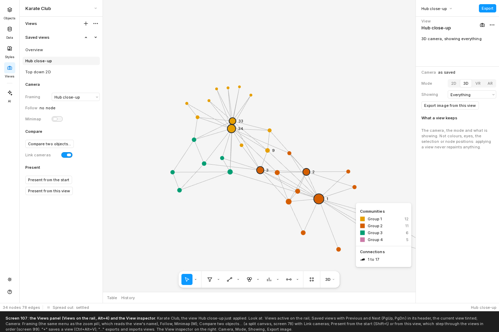
107. The Views panel
Karate Club, the view Hub close-up just applied. Look at: Views active on the rail; Saved views with Previous and Next (PgUp, PgDn) in its header, the current view tinted; Camera: Framing (the same menu as the zoom pill, which reads the view's name), Follow, Minimap (M); Compare two objects... (a split canvas, screen 78) with Link cameras; Present from the start (Shift+\) or from this view, which step through the views in order (screen 99). "+" saves a view (Ctrl+Alt+V); "..." exports and imports views. The View inspector on the right: Camera, Mode, Showing, Export image.
Open the HTMLPNG
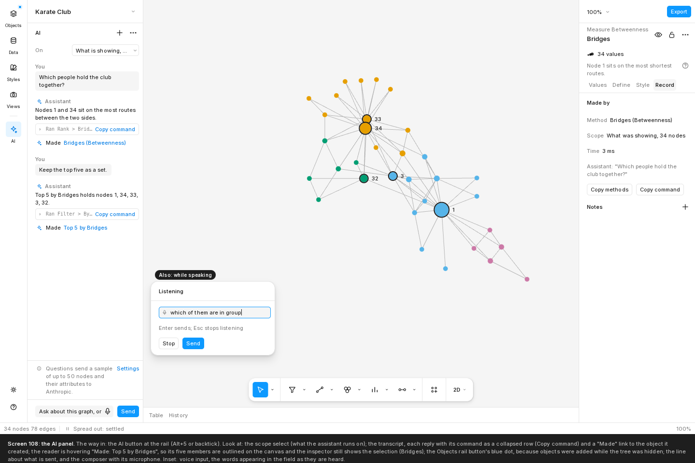
108. The AI panel: transcript, made objects, voice
The way in: the AI button at the rail (Alt+5 or backtick). Look at: the scope select (what the assistant runs on); the transcript, each reply with its command as a collapsed row (Copy command) and a "Made" link to the object it created; the reader is hovering "Made: Top 5 by Bridges", so its five members are outlined on the canvas and the inspector still shows the selection (Bridges); the Objects rail button's blue dot, because objects were added while the tree was hidden; the line about what is sent, and the composer with its microphone. Inset: voice input, the words appearing in the field as they are heard.
Open the HTMLPNG
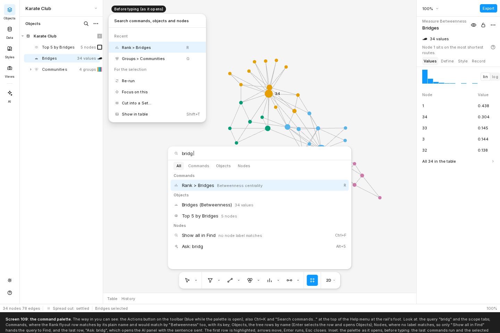
109. The command palette from the Actions button
The way in you can see: the Actions button on the toolbar (blue while the palette is open); also Ctrl+K and "Search commands..." at the top of the Help menu at the rail's foot. Look at: the query "bridg" and the scope tabs; Commands, where the Rank flyout row matches by its plain name and would match by "Betweenness" too, with its key; Objects, the tree rows by name (Enter selects the row and opens Objects); Nodes, where no label matches, so only "Show all in Find" hands the query to Find; and the last row, "Ask: bridg", which opens the AI panel with the sentence sent. The first row is highlighted; arrows move, Enter runs, Esc closes. Inset: the palette as it opens, before typing: the last commands run and the selected Measure's verbs.
Open the HTMLPNG
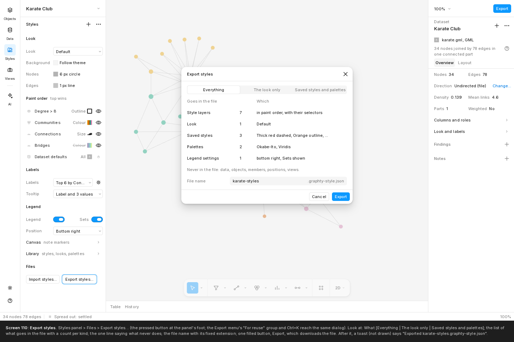
110. Export styles
Styles panel > Files > Export styles... (the pressed button at the panel's foot; the Export menu's "For reuse" group and Ctrl+K reach the same dialog). Look at: What [Everything | The look only | Saved styles and palettes]; the list of what goes in the file with a count per kind; the one line saying what never does; the file name with its fixed extension; one filled button, Export, which downloads the file. After it, a toast (not drawn) says "Exported karate-styles.graphty-style.json".
Open the HTMLPNG
111. Save current look, and the Look list
The background was set to white by hand, so the Look select reads "Default, edited". Styles panel > "+" (open) is Save current look...; the same command is in Ctrl+K. Look at: Name; Includes, read from the current whole-graph settings; Keep in [This project | This project and my library], the library being this browser, so the look is offered in the next project; the one filled button, Save look. The moment after (dark menu): the Look select lists the built-in looks, then Your looks with Lab print chosen. Picking any row applies that look in one undo step, and Ctrl+K "Look: Print" does the same.
Open the HTMLPNG

112. Export recipe from the file menu
The file menu (the moment before) keeps what acts on the session: open, save, close, and the recipe pair under them, Run a recipe... and Export recipe.... The dialog: every step in the order it ran, each with a checkbox (the layout, unchecked, is left out, so new data gets its own); Include views and Include data edits; the checks the recipe will run on new data; the file name. A recipe holds the steps, never the data, results or positions. Also reached from Export > For reuse, History's "...", and Ctrl+K. Running one is screen 20 (file menu > Run a recipe..., or drop the file on the canvas).
Open the HTMLPNG

113. The view-mode button and its menu
The way in: the last button on the toolbar, whose face is the current mode ("3D"); a click opens this menu, and the 5 key flips 2D and 3D without it. Look at: the check on 3D; VR dimmed, its tooltip giving the reason and the fix; AR with "Showing >"; the button drawn open. First inset: with a headset connected, VR's submenu picks what to take into the headset (Everything, then each Set and Group with its count); a plain click on VR takes what is showing; in the headset the face reads "VR" in blue and the menu's first row is "Exit VR". Second inset: every other control with a dropdown opens the same kind of menu from its chevron; Select's lists Select (V) and Hand (H). At rest the bar has no words but this button's two characters.
Open the HTMLPNG

114. The Time button: the visible way into time mode
Email network, just loaded, no time role set. Look at: the clock before Actions on the toolbar, drawn only because the data has a time column, with its tooltip naming the column and range; the Dataset's Findings row "Time column" with Show over time, the same action from the inspector; the menu (another file, two time columns) that asks which column to play over. Pressing Time or Show over time sets sent as the time role, sets the window to the whole year and shows the transport bar: screen 10. Static data never shows the button.
Open the HTMLPNG